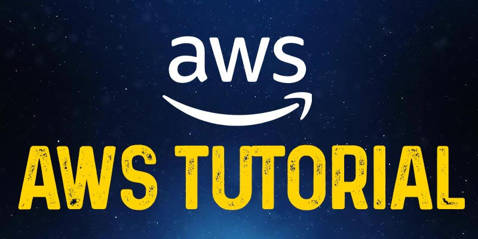

Overview
The acronym of Amazon Web Services is “AWS”. The AWS is the leading Cloud Computing platform that permits users to access on-demand computing services such as Storage, Networking, Database, Application Services, Management Tools, Security & Identity, and Virtual Cloud Server on a pay-as-you-go model. Before stepping in deep into the Amazon Web Services Tutorial let us have a clear understanding of What is Cloud Computing is all about? In simple words Cloud Computing nothing but that which utilizes the Remote Servers that are found on the internet to store, process, and manage data instead of storing them in a personal computer or local server.
Intended Audiences: This AWS Tutorial is crafted skillfully considering both the Freshers and Experienced professionals who are passionate about learning the AWS Cloud Services and its attributes extensively.
Prerequisites: To learn about the Cloud Services there are no prerequisites needed in specific. However, having the idea of the fundamentals of Networking or Cloud Computing will be of more benefit for you to comprehend the concepts at ease.
Getting to know about Cloud Computing and the Services offered
As stated earlier Cloud Computing is nothing but the delivery of on-demand IT resources via the Internet which you can use as pay-as-per your need. Rather than spending time and money on purchasing, owning, and maintaining the physical data servers & centers, you can utilize the technology services namely storage, computing, and database from the cloud provider based on your needs and requirements. In this AWS Tutorial for Beginners, we are going to see about the benefits of Cloud, Types of Cloud, and its stacks.
Benefits of Cloud Computing
Scalability: With the deployment of Cloud services the businesses can scale up or scale down their infrastructure and technology as per their requirement. It significantly saves time, money, and labor involved in the infrastructure deployments. This in turn boosts the productivity and profitability of the business immensely.
The facility of the Self-Services: On using the Cloud Services, the Enterprises could gain resources that are congenial with any type of workloads and this consequently exterminate the need for handling and conventionally computing the resources.
Security: Cloud Computing Services provide the most secure features for their users. The users can just trust the Cloud Service providers with all trust and confidence as it enables the end-to-end security features.
Pricing method - Pay-as-you-go: This is the best part of using Cloud Services. The Users are asked to pay the cost only for the resources that they have utilized.
Types of Cloud Computing
Public Cloud: This Cloud is open to all for accessing and storing information through the Internet by using the pay-as-you-go method. In the Public Cloud Service, the Computation of resources and maintenance is dealt with by the respective Cloud Service Provider. The services of the public Cloud are open to all; it has no restriction on the number of users. It can be utilized by individual users as well as big enterprises. For Example Amazon Web Service
Private Cloud: The Private Clouds are also termed as the "Corporate Cloud or Internal Cloud''. Generally, the Private Cloud Services are used by the Organizations for building and handling their data centers either internally or by any third-party service providers. These services can be deployed using the Open Source tools namely - Eucalyptus and Openstack. The Private Cloud is intended for organizations that are seeking a fool-proof security system and a separate cloud service for their personal use.
Hybrid Cloud: It is a blend of Private & Public clouds. In the Hybrid Cloud, the organizations use the Private cloud for dealing with confidential & important operations and utilize the Public cloud to share the completed workloads and for scaling up the infrastructure. Usually, the Companies can't just survive with the aid of the Private cloud as it requires the support of the public cloud to serve numerous and different purposes in a single shot. Hence, a perfect balance between both these clouds are highly recommended and this can be accomplished only with the help of a hybrid cloud. Examples of the Hybrid Cloud are:
- Google Application Suite - Google Apps, Gmail, and Google Drive
- Office 365 - MS Office on the Web drive and One Drive
Community Cloud: A Community Cloud permits the services and system to be accessed by a group of different organizations to share the resources and information between the different organizations of a specific community. Usually, it is owned, operated, and handled by more than one or more organizations in a community, or by a third-party service provider, or a combination of these two. Example: HealthCare Community Cloud.
Cloud Computing Stacks
The Stacks of the Cloud Computing are - SaaS, PaaS, and IaaS
- SaaS - Software as a Service: It permits the companies to utilize the software without having them purchase it separately. This significantly reduces the expenditure of the company as these services are already pre-installed on the Cloud Server the users can quickly deploy them directly and therefore it saves time immensely.
- PaaS -Platform as a Service: It permits the developers to collaborate and build applications on any projects without worrying about the purchase of the infrastructure. It provides the space for the testing and development of an application. Since you develop your projects on the Cloud and the maintenance of the infrastructure is completely handled by the Cloud.
- IaaS -Infrastructure as a Service: It enables the companies to rent the storage, servers, space, virtual machines, and other things from the Cloud provider.
And over here the AWS offers all these three stacks that are scalable and reliable at a cost-efficient range. In the upcoming AWS tutorial, we will guide you swiftly through essential AWS Services and how it functions in-depth with numerous illustrations and elaborate explanations. To gain hands-on experience and deeper insights into these services, enrolling in an AWS Training in Trichy can be highly beneficial.
AWS and its Significant Features
AWS is the stellar Public Cloud Service provider that supports its users with the best Cloud Services and Infrastructure for enterprises to host their applications. AWS is the most flexible and cost-efficient cloud service provider that is available in over 190+ Countries. In the year 2006, AWS embarked on its presence in the IT domain. Later AWS decided to provide vacant cloud servers for the general public. Currently, the Services offered are EC2, Elastic Beanstalk, and S3 have become the benchmark standards in the Cloud Computing space. AWS has helped the small-scale business for deploying Cloud Applications rapidly. Also, these services are widely adopted by large-scale enterprises owing to their cost-efficient features.
Global Infrastructure of AWS
The AWS offers a pervasive global imprint when compared to any of the other Cloud Providers in the market and also it expands itself rapidly when compared to any other service provider.
The AWS global infrastructure is vested over different Availability Zones and Regions. As of now, there are:
- 20+ Geographic Regions
- 65+ Availability Zones
- 5+ Local Regions
Below are the prime factors that make up the AWS Global Infrastructure:
- Availability Zones
- Region
- Regional Edge Caches
- Edge locations
Availability Zones: The Availability Zone is a dexterity that can be from anywhere in a city or country. There are numerous Data centers inside these zones and with that, we can have multiple servers, firewalls, switches, and loading balancing. The things that communicate with each other in the cloud are placed inside the data centers. An availability zone usually can be located at different data centers, however, in case they are closer to each other, they would be accounted as only 1 availability zone.
Regions
Generally, a Region is a Geographical area. And every region contains above 2 availability zones.
- The Region is the collation of data centers that are entirely secluded from the other regions.
- The Regions are composed of the above two availability zones that are connected through links.
- The Availability Zones are primarily connected with the help of the isolated and redundant metro fiber.
Regional Edge Cache
In the year 2016, AWS announced a new kind of Edge location which is also known as the Regional Edge Cache. Generally, the Regional Edge Cache is found between the Edge locations and CloudFront Origin Servers. Also, a Regional Edge cache has more cache than the individual edge location.
In case if a user requests data, and if the data is not identified then the edge location restores the cached data directly from the Regional Edge cache rather than the Origin Servers which has high latency. The Data is usually removed from the cache at an edge location, however, the data is generally restored at the Regional Edge Caches.
Edge Locations
- The Edge locations are usually the endpoints for the AWS that is used for caching the content.
- The Edge locations are way more than the regions. Presently there are around 150 edge locations.
- The Edge locations comprise Amazon's Content Delivery Network (CDN) and CloudFront.
- Edge locations are more than regions. Currently, there are over 150 edge locations.
- The Edge location is generally not a region, however a small location that AWS has. This is primarily used for caching the content.
- Generally, the Edge locations are located in the predominant of the major cities and it shares the content to the end-users with reduced latency.
Features of AWS
The following are the features of AWS and they are
- Cost-effective
- Flexibility
- Secure
- Elastic and Scalable
- Experienced
Cost-effective: The Monetary aspects are one of the important factors that have to be considered before delivering any of the IT solutions. The AWS provides no upfront cost and you can scale up easily.
Flexibility: The AWS allows the Enterprises to make use of the programming models, architectures, operating systems, and databases with which the AWS cloud is familiar. Further, it offers flexibility and it aids the organizations to mix & match the architectures to serve a different business purpose.
Secure: To enable end-to-end security and to support privacy the AWS builds the service in correspondence to security and best practices. The AWS Cloud offers the appropriate security features and services that comply with the needs and requirements which are put forth by the company.
Elastic and Scalable: Generally, in the traditional IT organizations, the elasticity and scalability are calculated with the infrastructure and investment in the Cloud whereas elasticity and scalability offer the enhanced ROI and savings. The Scalability in AWS has the capacity for scaling the computing resources when the demand increases or decreases commonly.
Experienced: The AWS Cloud offers levels of security, scale, privacy, and reliability. It persistently enhances the infrastructure capabilities of the users. Ever since AWS has landed into the IT domain the growth of the Amazon Web services has been tremendous and that it has met the growing needs. The AWS Training in Chennai at FITA Academy is an exhaustive training course that introduces the learners of the program to the AWS cloud services and makes them familiar with its features and its functions.
Applications of AWS
Currently, Businesses are integrating with the aid of Cloud Computing. The AWS occupies an important role in the integration as the firms make use of the AWS for securing, building, and storing their data. Further, the AWS Cloud enables the business with a set of services namely on-demand availability, computing power, and pay-as-you-go option. It supports the businesses with required staff and it handles the infrastructure as it could be handled all on its own. The Organizations can also alter the information by determining the most suitable mechanism that is used for connecting the infrastructure which is used for running your business irrespective of where they are hosted or located physically.
In this AWS tutorial, we are going to see the applications of AWS in different domains, and some of them are enlisted below.
AWS Application in Business Stream: AWS supports the Businesses to build the applications and multiply the new revenue streams immediately. With this, the enterprises can easily build or develop applications for their business purpose quickly. The Amazon EC2 has numerous different performance levels for supporting the application's requirements. The AWS Identity & Access Management permits you to check over your Web Applications constantly and it also helps in monitoring your unauthorized access.
Further with the aid of the AWS Management Kit, the organizations could easily manage and deploy the applications so that the users/ developers could focus on the different aspects of the applications. The AWS combines the services that are required for running and building your applications effortlessly. It supports you with more time and creating the image for your business.
AWS Applications in Content Management Systems: The AWS offers quality work with which they make or turn their customer’s loyal ones. The Content is usually offered by the users that are secure and confidential. AWS makes use of high-speed servers that helps the users to complete the task easily. The robustly processing databases are fully handled and known for their efficiency and scalability. This is a secure and durable technology platform. It ensures the integrity and security of your data. As the Amazon Data Centers consist of different layers of security. Further, in the Content Management Systems, it is not required to have a long-term commitment or the upfront expenses as it permits you to pay only for what you have used.
Advantages and Disadvantages of the AWS
Having seen the applications areas where the AWS Cloud services are primarily used now we are going to see through the advantages and the disadvantages in the AWS tutorial session.
Firstly, let us begin with the Advantage aspect,
Easy to Use: It is a known fact that AWS can even be used by any novice who is completely new to the Cloud platform. There wouldn't be many complications in the usage for both the new applicant and the existing applicant. The reason behind the reduced complications in the usage is due to the AWS Management consoles.
No Limitation: The Organization persistently introduces different projects and the business could not measure or estimate the capacity. The AWS aids them in providing the capacity at a cost-efficient range. With this, their workload is reduced and they can easily focus on the differently built ideas. The moment the business feels like increasing the capacity of the usage they can do so without any hurdle as it provides immense storage capacity and in the AWS Cloud services you have the highest flexibility and scalability option.
Recovery and Backup: The Storing and Retrieving of Data in the Cloud is comparatively easier than storing them on the Physical Device. The Cloud Service providers enable the users to recover and store the data flexibly according to their convenience.
Reliability: The Cloud Computing platform offers more reliable and consistent services than the local or the in-house infrastructure. The Cloud ensures its users with the 24*7 along with 365 days of service. In case if any of the other Servers fails then the hosted service or the application shall be easily transformed to any of the available servers.
The disadvantage of Cloud Computing
Technical Issues: The Cloud Service providers offer services to different clients on a day-to-day basis and this at times leads the systems to confront some critical issues that lead the business processes to be suspended temporarily. One of the major disadvantages of using the Cloud Service is that in case if there is no internet connection then the user can not access anything like server, data, or application from the Cloud.
Otherwise, the Cloud doesn't have any major drawbacks.
Setting up of AWS Account
In this AWS Tutorial for Beginners, we have jotted down the steps clearly on how to create an AWS Account. The account creation process includes four major steps and some of them are listed down:
- Creation of an AWS Account
- Signing into AWS Services
- Creating your Access & Password for your Account Credentials
- Activation of your service in the Credits section
Amazon provides its users the option of a completely functional free account for one year to make the users familiar with the different components of AWS. Upon gaining authorization to the AWS account you can access different services like EC2, DynamoDB, S3, and other services for free. Note: However, there are few restrictions based on the resources you consumed. Now, let us see the steps involved in it,
Creation of an AWS Account
Step 1: To Create an AWS Account, navigate to the website https://aws.amazon.com and then choose the option Complete Sign Up which is found exactly on the right corner of the page
Note: In case if you are an existing account holder, then you can proceed by signing into your account.
Later it shall display as shown below. Now at the bottom of the Page, you will find the option as Create a New AWS Account, Click on it.
Now enter the Account information,
Over here, you can fill in the desired Email Address, Password, and User name to create an Account. After filling in the details, tap on the Continue option to proceed further. The Contact Information shall appear on the page. Start Filling up your Contact Information.
After that click on the check box to ensure that you have gone through the terms and conditions and then hover your cursor to the option Continue to proceed further.
Step 2 - For further sign-in procedures, enter your Payment details. Amazon shall incur a minimal amount of transaction against and this charging fee shall differ according to the region you are signing in.
Step 3 - Now, it is the step of Identity Verification. Amazon now calls back you to cross-verify the submitted contact number.
Step 4 - Now you choose a Support Plan that suits your needs. AWS offers different plans like Basic, Business, Developer, or Enterprise. Note: The Basic Plan does not incur a charge and it has access only to limited resources however this plan is sufficient enough to get familiar with the AWS concepts.
Step 5 - This is the final step or confirmation. You can click on the link for login and again you can redirect them to the AWS Management Console.
AWS Account Identifiers
The AWS generally assigns its users with two unique IDs for every AWS Account holder and they are,
- AWS Account ID
- Canonical User ID
AWS Account ID
The AWS Account ID is a 12-digit number for instance 1345689723177 and is used for composing the ARN - Amazon Resource Names. This primarily helps in differentiating our resources from the other resources that are identified on the AWS Accounts.
Steps to find your AWS Account ID
- To find the AWS Account ID from the AWS Management Console please follow the below steps
- Login to your AWS account by entering your Email Address and Password and then you can move them to the Management Console.
- Now, select the option Account name, the Drop Down Menu appears
Canonical User ID
- The Canonical User ID is the 64-digit hexadecimal that is encoded with the 256-bit number.
- The Canonical User ID is used for the Amazon S3 bucket policy for the cross-account access that the AWS accounts shall access the resources with another AWS account. For instance, in case if you need the AWS Account Access i straight to your bucket, you must mention the Canonical User ID to your corresponding bucket's policy.
Identifying the Canonical User ID
Step 1: Navigate to the Website https://aws.amazon.com to log in to your AWS account by entering your mail password and address
Step 2: From the right side of your Management Console, tap on the account name option
Step 3: Now, tap on the option "My Security Credentials" from the Dropdown menu of the accountant name. Then the screen will appear as shown in the picture given below,
Step 4: Now, tap on the Account Identifiers for viewing the Canonical User ID.
AWS IAM
In this AWS Basic Tutorial session, we are going to see what IAM is all about and its features in-depth.
- The term IAM stands for - Identity Access Management
- The IAM enables you to handle different users and their range of access to the AWS Console
- This is used for setting up users, roles, and permissions. It permits you to give access to various parts of the AWS platform
- The AWS Identity & Access Management is the Web Service that allows the Amazon Web Service customers to handle the user's access and permission in the AWS
- With the aid of IAM, the enterprises could centrally handle the users, security credentials like permission, access keys, and other things that control the AWS resource users and their access.
- In case if there is no IAM, then the Enterprises with multiple users should either create multiple user accounts and each of them with its billing & subscription to the AWS products or they can share the account with a security credential that has only one or single access.
- The IAM allows organizations to create different users for their own security purpose and channel all the control and bills to a Single AWS Account. Learning how to efficiently manage such permissions and accounts is an essential part of an AWS Training in Erode, helping professionals understand secure access management within the AWS environment.
Features of IAM
Centralized Control of your AWS Account: You can easily control the Creation, Rotation, and Cancellation of all the user's security credentials. You shall also have control over what data the AWS System Users could access and how they could access it.
Granular Permission: It is used for setting the permission that the user can utilize for a specific service however it not applicable to any other services.
Shared Access for your AWS account: The Users could share the resources with the Collaborative projects.
Identity federation: The Identity Federation denotes that we can use Facebook, LinkedIn, and Active Directory with the IAM. The Users can also log into the AWS Console with similar Usernames and passwords as they log in with Facebook or the Active Directory.
Permission-Based Organizational Groups: The Users are restricted to the AWS Access that is based on the job profile or designations to name a few - Admin, Developer. The users are allowed to access the AWS only to the extent that has been authorized to them.
Multi-Factor Authentication: AWS enables multi-factor authentication to its users. To check your AWS Console Management the user must provide the following credentials such as Username, Security check code, and passwords to log in.
Network control: The IAM also assures that the users shall access the AWS resources within the organization's Corporate Network.
Integration with Different AWS Services: The IAM could be easily unified with other AWS services.
Grants temporary access for the users/services/devices when needed: In case if you are using the Mobile App for storing the Data into your AWS account, then you can execute this only when you have temporary access.
Consistent: The IAM Service is more persistent and it reaches the higher availability by depicting the data over different servers that are within Amazon's Data Center around the globe.
Free to Use: The AWS IAM is a part of the AWS account that is offered freely. The charges are incurred only when you are required to access the other AWS services using the IAM user.
Supports the PCI DSS Compliance: The PCI DSS stands for - Payment Card Industry Data Security Standard it is the compliance framework. In case if you are using the Credit Card information, then you must pay the compliance along with the framework. The AWS Online Training at FITA Academy supports the learners to build skills and knowledge that are highly needed to work in a Cloud environment under the training of Expert Cloud professionals.
IAM Identities
The IAM Identities are generally created for providing the authentication to people for processing into their AWS account.
An IAM Identities can be classified into three types and they are
- IAM User
- IAM Roles
- IAM Groups
AWS Account Root Users
- When you initially create the AWS account, you must create the account as the root user identity that is used for signing to AWS.
- We can Sign in to the AWS Management Console by entering the credentials such as Email address and Passwords. The blend of the Email ID and Passwords are known as the Root User Credentials.
- In case if you want to sign in to the AWS account as the Root User, you have all the Unrestricted access to the resources that are found on the AWS Account.
- The Root Users shall also get access to the billing information and they can change the passwords as well.
Amazon Elastic Compute Cloud
The Amazon EC2 is also known as the Elastic Compute Cloud that the Web Service interface offers the compute space in the AWS Cloud. This is primarily curated for the developers to have complete authority on the Computing Resources and Web-scaling. In this Amazon Web Services tutorial module, we have explained the concepts of the Amazon EC2, Components, and its features in-depth.
The EC2 instances could be resized and the total number of the instances could be scaled down and up as per the user requirement. And it is possible to launch these instances in more than one geographical region, location, or the Availability Zones. All the region consists of different AZs at various locations that are connected by the low latency networks of the same region.
EC2 Components
In the AWS EC2, the users should be aware of the following EC2 Components - Security Measures, Pricing Structures, and Operating Support systems.
Security Measures
The Users have complete control over the function and clarity of their respective AWS account. In the AWS EC2, the Security system permits the creation of the places and groups that run instances as per the needs. You can mention the groups with which the other groups shall communicate and the groups within which the IP subnets on the Internet may communicate.
Pricing Structures
AWS provides different types of pricing options and it depends on the kind of resources, applications, and databases. It permits the users to configure their resources efficiently and compute the charges respectively.
Migration
This service permits the users to move the existing application into the EC2. On average, it costs around $80.00 for each storage device and it incurs a charge of $2.49 per hour for data loading. This Service adheres to the users who have a mammoth amount of data to move.
Fault Tolerance
The Amazon EC2 permits the users to have access to its resources for designing fault-tolerant applications. The EC2 also constitutes the isolated and geographic locations which are known as the availability zones for stability and fault tolerance in its functions. Usually, it won't share the concrete location of the regional data and the centers for security purposes.
If the users launch the instances, then they should choose the AMI that is found in the same region where all the instances would run. Generally, the instances are spread across different availability zones for enabling constant services in the failures of the Elastic IP addresses and they are predominantly used for mapping up quickly the failed instances for addressing the concurrent running instances of the other zones to overcome the delay in the services provided.
Features of the EC2
- The EC2 offers you a path to host your server in the Cloud platform. The Servers are also called 'instances' in AWS. As the servers are hosted in the cloud, it is easy to connect the instances from anywhere across the world at any time.
- The EC2 offers multiple kinds of instances with various Network configurations and CPU Memory which are known as the instance type. It aids you to select the instance that is suitable for your Network and CPU memory.
- Generally, the instances are built in the form of pre-configured templates of the Application and OS which is also known as the Amazon Machine Image or the AMI. It significantly reduces the demand for getting through the setup of the application post the OS deployment and it immensely reduces the total deployment time of the instances.
- The EC2 offers the Key Pair to your Instance security. If you create your instance then you should create one key pair in case if you don't have any. The Public key is maintained by AWS and the Private key is shared with the specific user. Without these Private keys, you can not access any of your instances.
- It is easy to define a Firewall to your instance using the Security groups
- The EC2 offers the IAM roles to your instances for access management and you can assign the IAM roles to the account for improved granular access management.
- The EC2 offers different kinds of storage solutions to your instance based on persistence and performance. The Instances store the volumes that are used for temporary data and they are lost immediately once you have terminated or stopped it. To perform the persistent storage, you can go with Elastic Block Storage.
- Initially, when you create your EC2 instance, AWS allows one optional Public and Private IP address to your instances. However, the Public IP Address is dynamic and it could be modified when your instance is rebooted or stopped. For the Static Public IP address, you can make use of the Elastic IP Address.
- The Virtual Private Cloud (VPC) can be utilized for logically isolating the instances from the other AWS Cloud Infrastructure and you can also build your VPC.
- The AWS Cloud generally spans different countries and continents. You can make use of the instance locations by using the availability zones and regions.
AWS AutoScaling
The name itself suggests that it permits you to do the auto-scaling on your Amazon EC2 instances immediately upon the instructions that are set by a user. The Parameters such as maximum and a minimum number of instances are usually set by a user. On using this, the total number of the Amazon EC2 instance that you use increases immediately, and the demand for them significantly rises to handle the performance and consequently, it decreases the demand when the cost is minimized.
Auto Scaling is more effective for those applications which fluctuate daily, hourly, or weekly usage. The Auto Scaling option is enabled by the Amazon CloudWatch and you can use it by not paying any additional charges. The AWS CloudWatch is used for measuring the Network traffic and CPU Utilization. In this AWS Tutorialspoint, we will cover you with Load balancing and auto-scaling features.
Elastic Load Balancing
The Elastic Load Balancing which is also known as “ELB” shortly, rapidly shares the incoming traffic requests that are raised from different Amazon EC2 instances and help in achieving the results of higher fault tolerance. It helps in determining the unfit instances and immediately routes the traffic back to the fit instances and avoids fixing the unfit instances in the round-robin manner. However, you may require more complex algorithms for routing and then choosing the other services such as Amazon Route53.
Generally, the ELB Comprises three major components and they are,
- Load Balancer
- SSL Termination
- Control Service
Load Balancer
It comprises the handling and monitoring of the incoming requests via the Intranet/Internet and it distributes them to the EC2 instances that are registered within it.
SSL Termination
The ELB offers the SSL Termination that protects important CPU cycles, decoding, encoding of the SSL within your EC2 instances that are affixed to the ELB. To do this an X.509 certificate is needed for configuring it within an ELB. The SSL connection on the EC2 instance is optional and you can terminate it whenever you want.
Control Service
It includes the features of Automatically scaling and handling capacity in correspondence to the incoming traffic by removing or adding the load balances as they are required. It does perform the fitness check of an instance on scaling it up.
The AWS Training in Bangalore at FITA Academy is an exhaustive training program that introduces the learners of the training course to the platform of AWS cloud and its applications under the mentorship of expert professionals.
Attributes of ELB
Listed below are the significant features of the ELB:
- The ELB is curated to manage endless requests per second with the constantly increasing load patterns
- You can add/remove the Load Balances as per the need without stirring the complete flow of the information
- You can configure the EC2 instances and the load balancers for accepting the traffic
- Generally, the ECS instances are not curated in perspective to manage the swift increases in the requests such as online training and online exams
- You can remove/add the load balancers as per the need by not affecting the complete flow of information
- The Customers could permit the Elastic Load Balancing within the Single Availability Zone or among Different Zones for enhanced and persistent application performance
Amazon WorkSpace
The Amazon Workspace is entirely handled by the desktop computing service on the Cloud that permits its customers for offering the Cloud-based desktop for their end-users. With this, the end-users could access the applications, documents, and other resources using the devices of their preference like iPad, Kindle Fire, Android Tablets, and Laptops. The WorkSpace was launched with the motto to cater to its customers with the rising need for the Desktop as a Service (DaaS) which is Cloud-based.
A WorkSpace is the persistent Windows Server 2008 with the R2 instances that resembles Windows 7 and it is hosted on the AWS cloud. Generally, the Desktops will be computed for the users with the support of PCoIP, and the data are usually backed up on default for every 12 hours once. In this AWS Tutorial for Beginners, we are going to see about the AWS WorkSpace setup- features and Advantages.
User Requirements
An Internet connection with UDP and TCP open ports is required from the User’s end. Also, they should have downloaded the Free Amazon WorkSpaces Client Application to the respective device
Creation of Amazon Workspace
Follow the below procedures to create the Amazon Workspace
Step 1 - First Create and Configure the VPC
Step 2 - Create the AD Directory by abiding by the below procedures
- Navigate to the link that is given below for opening the Amazon Workspace Console
- https://console.aws.amazon.com/workspaces/
- Choose the Directories, and then click on the Setup Directory on the navigation panel
- The Page will open. Now you can select the Create the Simple AD button, later you can fill in the required details.
- Now on the VPC Selection, you can fill in the VPC details, and then you can choose the Next step
- Now the Review page will pop up and it shall open to the review information. Now, you can make changes in case if they are incorrect, and then you can tap to the option Create Simple AD button
Step 3 - Create the WorkSpace by following the steps that are mentioned below
- You can use the link that is given below for opening the Amazon WorkSpace console https://console.aws.amazon.com/workspaces/
- Now Select the Workspaces and then launch the WorkSpaces options that are found on the navigation panel.
- Choose the Cloud Directory. Now, click on the Enable/Disable WorkDocs for all the users in the directory and then you can click on the Yes/Next button.
- Now, a New Page shall open. You can fill in the details that are needed for the New User and you can tap the Create Users button. Later when you find that the User is added to the WorkSpace list, then you can choose the Next option.
- Now type the number of bundles that are required on the value field of the WorkSpaces Bundles Page, then you can select the Next Option.
- Now, you can see that the Review page shall open. Now check into the details and do make the changes that are needed. Choose the launch WorkSpaces
- Then there will appear a text on the screen to confirm that the account after which you can use the workspaces.
Step 4 - Test your WorkSpace by following the below procedures.
Now Download and Install the Amazon WorkSpaces Client Application by using the link that is given below
https://clients.amazonworkspaces.com/
Now you should run the entire application. Initially, you should enter the registration code that is received in the Email and Click on the register option
Then you can connect it to the WorkSpace by typing the User name and the Password of the User. Then Select the Sign IN option
The Workspace desktop shall now appear. Navigate to this link http://aws.amazon.com/workspaces/ on your Web Browser. Now verify the page which can be viewed by you.
A Pop-Up message shall appear stating "Congratulations!" You have successfully created your Amazon Workspace Cloud Directory and that your first WorkSpace is functioning properly with adequate Internet Access.
AWS Workspace Features
Network Health Check-up
The AWS Workspace Features checks whether the Internet and Network connections are functioning and verify if the Workspaces and its combined registration services are feasible to access. Also, you must check whether Port 4172 is kept open for the TCP and UDP access or not.
Client Reconnect
This feature permits the users to get access to the respective workspace without having to enter the credentials each time when they are disconnected. The Applications that are installed on the Client's device store access to the token in a secured place. This Access shall be valid for a period of 12 hours and it accredits the right users. The Users shall now click on the Reconnect button of the application to get their access to the Workspace. The Users are allowed to discard the features at any time they want to do so.
Auto Resume Session
This feature of the AWS WorkSpace permits the Clients to resume their session right from where it was disconnected within 20 minutes. In case of any critical issue, it shall be extended to 4 hours. The Users have the right to discard this feature at any time in the group policy section.
The Console Search
This feature permits the Administrators for searching the Workspaces by using the directory, user name, or bundle type.
Advantages of the Amazon WorkSpaces
- Cost-effective - The Amazon Workspace does not incur any upfront commission and the customer can pay as they use it.
- Easy to Set up - The Customers could choose the AWS WorkSpace plan based on their preference and support them with the requirements like memory, storage, applications, number of desktops, and CPU type.
- Choice of the Applications and Devices - The Customers shall install the Amazon WorkSpace application into their device free of cost and can opt for any of the applications from the given list. The AWS Training in Ahmedabad at FITA Academy proficiently explains to the students of the AWS course to set up a workspace and how to work on it in real-time practices with certification under the guidance of Expert AWS professionals.
AWS Lambda
The AWS Lambda is the responsive cloud service that allows inspecting the actions that are found within an application and acknowledges it on deploying the user-defined codes that are called functions. The Lambda could immediately handle the compute resources over different available zones and it can scale them to the newly triggered and actions. Generally, the AWS Lambda supports the Codes that are written in Python, Java, and Node.js and these services shall introduce the processes in the languages that are supported by Amazon Linux. Below are the tips that are suggested for using the AWS Lambda. In this AWS Cloud Computing tutorial let us see in-depth the Lambda functions and their attributes
- You can write the back your Lambda function code even with the stateless style
- Make sure that you have the set of +rx permissions on your specific files in the uploaded Zip to ensure that Lambda could execute the code in your favor.
- It is not advisable to declare any of the function variables behind the scope of the handler
- You can delete the “Old Lambda function” that is no longer required
AWS Lambda Configuration
Go through the guidelines that are given below for configuring the AWS Lambda in case it is your first time.
Step 1 - Sign in to your corresponding AWS Account
Step 2 - Choose the Lambda from the AWS Service Section
Step 3 - Choose the Blueprint (Optional) and click on the Skip Button
Step 4 - Provide the required details for creating the Lambda function as displayed in the below screenshot and now you paste the Node.js code so that it will be triggered immediately at any time you need to add an item in the DynamoDB. Now, Select all the needed permissions.
Step 5 - Tap on the Next Button to Check all your details
Step 6 - Choose on the Create Function Button
When you choose Lambda Services now click the Event Sources tab, and you will not be able to find any records. It is possible to add at least one source into the Lambda function for working. Here you can add the DynamoDB Table into it. You can create the table by using the DynamoDB
Step 7 - Choose the Stream tab and their associate along with the Lambda function.
You can see this Entry on the Event Sources Tab of the Lambda Service page.
Step 8 - You can add some of the entries in the table. When the entry gets saved or added, then the Lambda services would trigger the function. You can verify it using the Lambda logs.
Step 9 - You can see the logs by selecting the Lambda Service and tap on the Monitoring tab. Now, you can click on the View Logs of the CloudWatch
Advantages of the AWS Lambda
Below are some of the major benefits of using the Lambda Tasks
- The Lambda tasks don't need to be stored on the Amazon SWF Activity types
- You can make use of the existing Lambda functions which you have mentioned on the workflows
- The Lambda functions are generally called by the Amazon SWF directly, there are no requirements for designing the program for executing and implementing them
- The Lambda offers us the logs and metrics to track the function execution
Limitation of the AWS Lambda Limits
Given below are the three kinds of Lambda Limits
Resource Limit
The table that is given below precisely explains the list of resources and the limitations of the Lambda function
|
Resources |
Default Limits |
|
Number of file descriptors |
1024 |
|
Ephemeral disk capacity |
("/tmp" space) 512MB |
|
Number of threads and processes (accumulated total) |
1024 |
|
Call for request body payload size |
6 MB |
|
Call for response body payload size |
6 MB |
|
Maximal execution duration for each request |
300 Seconds |
Throttle Limit
A Throttle limit is the 100 synchronous Lambda functions that execute for all accounts and this applicable for the complete synchronous execution over the functions of the same region.
The formula which is used for calculating the total number of concurrent executions for a function = (average period of the function execution) multiplied with the (number of total events or request that are processed by the AWS Lambda) When the throttle has reached its limitation then it sends back the throttling error of having the error code 429. Later after 15-30 minutes, you can re-start the work again. You can increase the total limit of the Throttle upon contacting the AWS Support Center.
Service Limit
The table which is provided below showcases the set of service limits to deploying the Lambda function
|
Item |
Default Limit |
|
Lambda function deployment the package size of (.zip/.jar file) |
50 MB |
|
Overall size of the deployment packages that could be uploaded as per the region |
1.5 GB |
|
Total Number of Unique Event sources that are found on the Scheduled Event Source type for each account |
50 |
|
The Size of the dependencies/code that you zip to the deployment package (zip/jar uncompressed size) |
250 MB |
|
The total number of distinct Lambda functions you can join to all the Scheduled Event |
5 |
The AWS Training in Hyderabad at FITA Academy prepares the students of the AWS course to have a wider and in-depth understanding of the AWS Cloud architecture and its functions under the mentorship of real-time professionals with certification.
Amazon S3
In this AWS Tutorial for Beginners, we will get you covered with AWS S3 services What is Amazon S3 is all about, the advantages of S3, and how the S3 services are used.
What is Amazon S3?
The Amazon S3 stands for “Simple Storage Service” is the best place to stack all your files. The Amazon S3 is an Object-based Storage, where you can store all the word files, pdf files, and images. The Amazon S3 is devised in a manner to store the large-capacity and other cost-efficient storage provisions over different geographical locations. The Amazon S3 offers IT professionals and Developers a Durable, Highly Scalable, and Secure object storage
S3 Durable
- It constantly checks the continuity of the data stored using the Checksums. For instance, if the S3 finds that there is corruption in the data, it would automatically repair it with the aid of replicating the data.
- Though when you retrieve or store the data, it verifies the incoming network traffic for any of the corrupted data packets.
S3 Highly Scalable
It allows you to scale your storage rapidly as per your need and you are required to pay only for the storage you have used.
S3 Secure
The Encryption of the Data can be performed in two different ways and they are
- Client-Side Encryption
- Server-Side Encryption
Numerous copies are maintained to allow the regeneration of the data in terms of data corruption
The Versioning, wherein all the edits are archived for the potential retrieval.
Data Storage Capacity of AWS S3
You can virtually store any amount of data, in any kind of format in the S3.
Generally, in S3 you can store any data ranging from 0 Bytes to 5 TB. It has the capacity of unlimited storage which indicates that you can store any amount of data and as much as you need. The Files are usually stored in the Bucket. The Bucket is a kind of folder that is found in the S3 which stores the files. The S3 is the Universal Namespace which means that the names should be unique. The bucket consists of the DNS address. Hence, the Bucket should consist of a distinct name for generating the unique DNS address.
Advantages of the Amazon S3
Creation of Buckets: Initially, we should create the bucket and give a name to that bucket. The Buckets are the containers in the S3 which stores the data. It is a must that the Buckets should have unique names for generating the distinct DNS address.
Storage of Data in the Buckets: The Buckets could be used for storing the endless amount of data. You can upload the files into the Amazon S3 bucket as per your need and there no limitations for storing the files. All Objects consist of a total space of up to 5 TB. All the objects shall be retrieved and stored using the distinct developer-assigned key.
Permissions: You can also deny or allow access to who needs to upload or download the data from their Amazon S3 bucket. The Authentication mechanism helps to keep the data secure from unauthorized access.
Download Data: You can download the data from your bucket and you can also grant permission to the others for downloading the same data. You can also download the data whenever you need it.
Security: The Amazon S3 offers security features such as restricting unauthorized users to access your data.
Standard Interfaces: The S3 is used with Standard interfaces like SOAP and REST interfaces that are curated in the manner that they can function efficiently with any of the development toolkits.
S3 Key-Value Store
The S3 is the Object-based storage capacity. The Object consists of the below:
Value: It is simply the Data that is made up of the Sequence of the bytes. In simple words, it is that Data that is inside the file.
Key: It is nothing but the name of an object. For instance - a spreadsheet.xlsx and hello.txt. You can make use of the key for retrieving the object.
Version ID: The Version ID distinctly finds out the object. It is the String that is generated by the S3 when you add the object to an S3 bucket.
Subresources: The Subresources mechanism are used for stacking the object-specific information
Metadata: It is the details about the data that you are about to store. The Set of name-value pairs with which you store the details of the object. The Metadata could be assigned to the other objects in the Amazon S3 bucket.
Access Control Information: You can place the permissions separately on your files
Prime concepts of the Amazon S3
The below are the important concepts of the Amazon S3
- Objects
- Buckets
- Keys
- Data Consistency Model
- Regions
Objects
- The Objects are the Entities that are stacked in the S3 bucket.
- The Object comprises metadata and object data where the metadata is the group of name-value pairs which explain the data.
- The Objects are distinctly found within the bucket by using the version and key ID
- The Object comprises default metadata namely the data which was lastly modified, the standard HTTP metadata, and other content types. The Custom Metadata shall also be mentioned while storing the object.
Buckets
- All Objects shall be incorporated in the bucket.
- The Bucket Container is used for storing objects.
- For instance, if the Objects are named photos/flowers.jpg then this is stored in the flower image bucket, then later it can also be addressed using the URL http://flowerimage.s3.amazonaws.com/photos/flower.jpg.
- The S3 performances remain the same irrespective of how many buckets you have created
- The Bucket has no restriction to the total amount of objects that it stores. The bucket can exist inside the other buckets.
- The AWS account that builds a bucket owns it solely and not any other AWS users can own it. Hence, you can tell that the ownership of the bucket can not be transferred.
- Only the AWS Account which creates the bucket could delete the bucket and not the other AWS user could delete the bucket.
Keys
- The Key is the distinct identifier of the object
- All the objects in the Bucket are related with one key
- The Object could be distinctly found using the combination of the bucket name, optional version ID, and the key
Data Consistency Model
- The Amazon S3 depicts the data for multiplying the servers to reach higher availability.
- There are two types of model and they are:
- Read-after-write consistency for the PUTS of the Newer Objects
- For the PUT request, the S3 stacks the data over different servers to reach higher availability.
- The Process stores the objects to the S3 and this will be available immediately for reading the object
- It won't take more time for the propagation also the changes would be reflected immediately
- The Process stores the New object to the S3, and this will soon enlist the keys that are within the bucket
Eventual Consistency for Overwrite PUTS & DELETES
- For the PUTS and DELETES, the changes would be reflected automatically and they will not be found immediately
- In case if the process gets deleted then the existing object shall automatically try to read them. By the time the Changes is completely propagated, the S3 shall return to the prior data
- If the process deletes the existing object, then it will automatically list all the keys that are within the bucket. By the time the Change is completely reflected, then the S3 may send back the set of deleted keys
- When the process deletes the existing object, then you can automatically try to read them. By the time the changes reflect the S3 shall send back the set of deleted data
Regions
- You can select the geographical regions in which you desire to store the buckets that you have developed
- The Objects shall not leave the regions until you transfer the objects explicitly to the other regions
- The Region is selected in a manner that it shall optimize the latency or reduce the cost or the address regulatory needs
The AWS Training in Coimbatore at FITA Academy is an expertly tailored course that helps the learners of the AWS course, to get acquainted with the essential services such as storage, computation, deployment, security under the mentorship of real-time professionals with certification.
Having seen in-depth of the AWS S3 concepts, in this AWS Tutorials point we are going to further see about the AWS Storage Classes
AWS Storage Classes
- The S3 Storage classes are primarily used for assisting the concurrent loss of data in more than two facilities
- The S3 enables the lifecycle management for the rapid migration of the objects of cost savings
- The S3 Storage classes handle the continuity of the data using the checksums
The S3 consists of four kinds of storage classes and they are
- S3 Standard
- S3 Standard IA
- S3 one zone-infrequent access
- S3 Glacier
S3 Standard
- The Standard Storage Class stacks in the data that are found redundantly over different devices in multiple facilities
- The Standard is the Default Storage Class when none of the Storage class are mentioned at the time of Upload
- It is mainly curated to overcome the loss of 2 facilities parallelly
- It supports users with high-performance output and low latency and is highly durable
S3 Standard IA
- The term IA stands for infrequently accessed.
- The Standard IA Storage Class is utilized when the data are accessed less frequently but it needs robust access when required.
- It charges a lower fee when compared to the S3, however, over here you will be asked to pay a retrieval fee.
- It is curated to sustain the failure of 2 facilities concurrently.
- It is primarily used in larger objects that are greater than the 128 KB kept for at least 30 days.
- It supports users with high-performance output and low latency and is highly durable
S3 One Zone- infrequent Access
- The S3 one zone-infrequent access storage class is utilized when the data are accessed less frequently however it needs robust access at the time of requirements
- It is the ideal choice for the data that are accessed less frequently and that which does not need the availability of the Standard or the Standard IA Storage Class
- This Stores the data in one availability zone however the other storage classes store this data in at least three other availability zones. Owing to this reason, the costs are 20% lesser than the Standard IA Storage Class
- This is the best choice for storing the backup data
- This is cost-effective storage that stimulates from the other AWS regions by using the S3 Cross-Region Replication
- It provides the features of high-performance, durability, & low latency along with the low retrieval fee and price
- It offers the lifecycle management for rapid migration of the objects to the other storage classes
- Also, it possible to lose the data at any time of the destruction of the availability zone and it stacks the data as the single availability
- It is curated for offering maximum durability and availability for the objects that are found on the Single Availability zone
S3 Glacier
- The S3 Glacier Storage Class is the nominal and affordable storage class, however, this is used only for archive purpose
- It is possible to store data of any amount at a cost-efficient range when compared to the other storage classes
- The S3 Glacier offers three kinds of models and they are
Standard: It retrieves the time of the standard model within 3-5 hours
Bulk: The total retrieval time of this bulk model extends up to 5-12 hours
Expedited: Here the data are stored only for few minutes and it incurs a higher cost
It is possible to upload these objects directly into the S3 Glacier.
Also, this is developed in the aspect to provide durability and scalability of the objects over different availability zones
AWS Load Balancer
The Load Balancer is the Virtual appliance or machine that enables you to balance the Web application load and this shall be HTTP or HTTPS traffic. The Load Balancer aids in loading different web servers equally so that no other web servers are swamped. In this AWS Tutorial, we will guide you through different AWS Load Balancers.
Application Load Balancer
- The Amazon Web Service introduced a new kind of Load Balancer which is also called Application Load Balancer (ALB).
- This is primarily used for directing the user traffic to the Public AWS Cloud.
- It determines the incoming traffic and sends it to accurate resources. For instance, if the URL has the API extension, then this would be moved to the respective application resources.
- The Application Load Balancing is generally operated at 7 Layer of OSI Model
- It is preferable for HTTP and HTTPS traffic
- The Application of Load balancers is smart and accurately sends specific requests to respective Web Servers.
Network Load Balancer
- This is operated at 4 different Layers of the OSI Model
- It enables routing the decision on the transport layer and this shall handle millions of requests for every second.
- When the Load Balancer receives the connection, then it shall choose the target from a specific group using the flow hash routing algorithm. This opens up the TCP connection for the chosen target of a port and this forwards the request by not modifying its headers.
- This kind of load balancing is best suited for the TCP traffic where high performance is needed.
Classic Load Balancer
- This operates at the 4 layers of the OSI model
- This helps in routing the traffic among the client and the backend servers on the basis of the IP address.
- For instance, the Elastic Load Balancer receives the request from the client on the top of the TCP port 80, and this will route the request to the desired port of the backend servers. The Port on which aa Load Balancer routes to a specific target, there will be a server having a port number of 80. Then the backend servers would forward the request back to the data of the ELB and this shall further forward the Backend server reply to a client. Based on the perspective of the client, the request is being accomplished by the ELB and not by the Backend Server.
- The Classic Load Balancers are termed as the Legacy Elastic Load Balancers
- This can also be used for the Load Balancing of the HTTP or the HTTPS traffic by using the 7-specific features like the Sticky sessions and X-forwarded.
- Also, you can use the Layer Load Balancing for the applications that depend on the TCP protocol.
Load Balance Errors
When you receive the error code of 504, then this is the gateway timeout error. The Load Balancer is still found, however, this has a problem while communicating it to the EC2 instances. Thus, when your applications stop responding to the ELB i.e the Classic Load Balancer then you will have a response of 504 error. It indicates that the application is still having issues and is not resolved. To resolve it you can either check the Database Layer or through the Web Server layer. Over here you must troubleshoot the application where it fails and scale the application up or out wherever it is possible to do so.
X- Forwarded-For-Header
- The X-Forwarded-For-Header is used for identifying the IP address of the Client when you are utilizing the Load Balancer.
- The User is one the Ipv4 address which is nothing but 124.12.3.23.
- The User sends the request to the Classic Load Balancer and this, in turn, manipulates the request to an EC2 instance. The EC2 instance shall use the private address for instance 10.0.0.23 and this would be the one and only address that is seen by the EC2 instance.
- The EC2 instances help in acquiring the private address of the Classic Load Balancer that consists of the Public IP Address. The Public Address is required for providing useful information like who, when, and how they have used your Website.
- The EC2 instances access the Ipv4 address in the method of X-Forwarded-For request Header from a Classic load balancer.
Amazon Elastic Block Store
In this AWS Tutorial for Beginners module, we have explained elaborately the Amazon Elastic Block Store, its types, and the benefits of the Amazon EBS.
The Amazon Elastic Block Store is also popularly called the EBS is one of the Block Storage systems that is used for stacking the constant data. The Amazon EBS is best suited for the EC2 instances and it offers high level and available block storage volumes. It consists of three kinds of volume and they are
- General Purpose (SSD)
- Provisioned IOPS (SSD)
- Magnetic
And these three volumes vary in characteristics, performance, and costs
General Purpose EBS
This kind of volume is preferable for all the small and medium workloads such as Root Disk EC2 volumes, Frequently accessed log Workloads, Small & Medium Database workloads. By default, the SSD supports 3 IOPS. The term IOPS stands for (Input-Output Operations Per Second) and GB means 1 GB volume would give 3 IOPS and the 10GB volume would provide 30 IOPS. The Storage capacity of the one volume would range somewhere around 1GB -1TB. And the overall cost of one volume is $ 0.10 for each GB for a month.
Provisioned IOPS (SSD)
This Volume kind is preferable to almost all kinds of demand I/O intensive, large relational, transactional workloads, Hadoop workloads, and EMR. By default, the IOPS SSD backs up 30 IOPS/GB and it indicates that 10GB volume will be provided for 300 IOPS. Also, the storage capacity of one specific volume ranges from 10GB to 1TB. And the cost for one volume is $ 0.125 for each GB for every month.
EBS Magnetic Volumes
This was earlier known as the Standard Volumes. This kind of volume is preferable for workloads such as infrequently accessing the data which means log storage and data backups. It stores the capacity of one volume that ranges from 10GB to 1TB. The overall cost of this volume is $ 0.05 for each GB per month. And it costs 0.05 for every million I/O request
Volume Attached for every Instance
All the Account would be limited to 20EBS volumes. For a need of above 20 EBS volumes, you can contact Amazon's Support Team. Also, you can attach up to 20 volumes to a single instance and all the volume ranges from 1GB to the 1TB size.
In the EC2 instances, you can store the data on the local storage and it will be found until the instances run. Despite this, when you shut down the instance, the data would be lost. Hence, we must save anything and this is advised to save on the Amazon EBS so that you read and access the END volume at any point of time, once you attach the file with the EC2 instances.
Amazon EBS Benefits
Secure - Amazon's Flexible Access Control Policies permit to mention who can access the EBS volumes and which volumes you could access. The access control provides strong encryption and offers highly fool-proof security features.
Higher Performance - The Amazon EBS is used for SSD Technology for delivering data results with the consistent I/O performance of an application.
Secure and Reliable Storage - All the EBS volume would immediately retort to its Availability zone for protecting the component failure
High Performance - The Amazon EBS uses the SSD technology for delivering the data results with consistent I/O performance of an application.
Data Backup: The process of Data backup is easier here. You can do the data back up by saving the point-in-time of the snapshots of the Amazon EBS volumes.
AWS Storage Gateway
The AWS Storage Gateway offers a combination between the AWS storage infrastructure and the on-premises IT environment. The Users shall store the data in the AWS Cloud for scalable and data security features at a cost-efficient range. In this AWS Tutorial, we will clearly dive you deep into the different storage gateways that AWS has to offer.
The AWS Gateway provides two kinds of storage - Volume-based and Tape based
Volume Gateways
This kind of storage offers the Cloud-backed storage volume that can be soared as the Intent Small Computer System Interface and the device from the on-premises of the application servers.
Gateway-cached Volumes
The AWS Storage Gateways stacks all the on-premise applications of data in the storage volume in the Amazon S3. It stores the volume that ranges from 1 GB to 32 TB and up to 20 volumes with an overall total storage of 150 TB. It is possible to attach all these volumes with the iSCSI devices right from the on-premises to the application servers. This is of two types
Cache Storage Disk
All the application needs storage volumes for stacking their data. This storage kind is used for storing the data in the very first stage where it has to be written for storing the volumes in the AWS. The Data that is collected from the cache storage disk is waiting to be uploaded into the respective Amazon S3 from the upload buffer. The cache storage disk records mostly the recently accessed data for low-latency access. When the application requires data, the cache storage disk is initially checked before the Amazon S3
We have to abide by a few guidelines to identify the total amount of disk space that should be allotted for each storage cache. We should allow at least 20% of the files that exist for storing the size as cache storage. It should be more than the upload buffer.
Upload Buffer Disk - This kind of storage disk is utilized for stacking the data to the Amazon S3 over the SSL connection before uploading them. Generally, the Storage gateway uploads the data right from an upload buffer to hoard the SSL connection to AWS.
Snapshots - We may back up the storage volumes in the Amazon S3. These backups are generally incremental in nature and they are called Snapshots. The Snapshots are stacked in the Amazon S3 on the label called Amazon EBS snapshots. The Incremental backup indicates that the new snapshot is backed up only to the data that has been altered since the recent snapshot. The snapshots could be taken at a scheduled interval or as per priorities.
Gateway - Stored Volumes
If the Virtual Machine (VM) is activated, then the gateway volumes are constructed and outlined to the pathway of on-premises that are direct-attached to the storage disks. And so, when the applications are read/write from a gateway storage volume, it shall write and read the data from the outlined on-premises disk. The Gateway-stored volumes permit you to hoard the primary data locally and offer on-premise applications along with lower-latency access for the complete datasets. We can organize them as the iSCSI devices for the on-premises application servers. It ranges from 1 GB - 16 TB in size and it shall also support 12 volumes per gateway with a maximum storage of 192 TB.
Gateway - Virtual Tape Library (VTL)
This kind of storage offers the virtual tape infrastructure that computes uninterruptedly with your business requirements and thus it eliminates the operational burdens such as scaling, provisioning, and handling the physical tape infrastructure. All Gateway - VTL is configured priorly with the tape drives and media changer that are found with the current client backup applications as displayed on the iSCSI devices. The Tape Cartridges shall be affixed to the later part as they are needed to archive data.
Some of the Architecture terms that are used are:
VTL - Virtual Tape Library: All Gateway - VTL comes with one VTL. The VTL resembles the physical tape library that is found in the on-premises along with the tape drives. The Gateway initially stores the data in the local and then uploads them to the Virtual tapes in a non-synchronized manner.
Virtual Tape - The Virtual Tape replicates the Physical Tape Cartridge. And these are hoarded in the AWS Cloud. It is possible to construct virtual tapes in two methods: by using the AWS Storage Gateway API or by AWS Gateway Console. The overall size of all tapes ranges from 100 GB to 2.5 TB. The size of each gateway shall hold up to 150 TB and it can on average shall hold up to 1500 tapes during a time.
Tape Drive - The VTL Tape Drive resembles more of a Physical tape drive that shall perform the I/O operations on the tape. All the VTL consists of more than 10 tape drives which are used in backing up the applications of the iSCSI devices.
Virtual Tape Shelf (VTS) - The VTS is used for archiving the tapes from the gateway VTL to the VTS in a vice-versa manner.
Media Changer - The VTL Media Changer is identical to the robot that moves the tapes over the physical tape library's tape drives and storage slots. All VTL comes with one media changer that is used for backing up the applications as that of the iSCSI device.
Retrieving Tapes - The tapes are generally archived to the VTS and it is not possible to read the archived tape, you may need to retrieve the tape right from the gateway VTL or by using the AWS Storage Gateway API or by the AWS Storage Gateway Console.
Archiving Tapes - When the backup of the Software ejects the tape, then the gateway shifts the specific tape into the VTS for storage purposes. This is primarily used for data backups and archiving.
The AWS Training in Gurgaon at FITA Academy provides hands-on training of the Cloud skills and makes you proficient with the key AWS services namely - storage, compute, and database under the mentorship of real-time professionals with certification.
Amazon CloudFront
In this Amazon Web Service tutorial session, we have discussed AWS CloudFront, key terminologies, and its benefits in-depth to make you understand the concepts and their use cases clearly.
The CloudFront is the Content Delivery Network (CDN). It helps in retrieving the data from the Amazon S3 bucket and it transfers it to the different datacenter locations. It provides the data via a network of Data Centers named the Edge locations. The nearest edge location is outlined when a user requests data and it results in low latency, robust access to the data, and lower network traffic.
The Tools that are used for handling the APIs are AWS Management Console, SDKs, CLIs, and AWS CloudFormation. The Amazon CloudFront also provides services at a cost-efficient range as the users requested to pay for only what they have used and this is called pay-as-you-go.
The Key Terminologies of the CloudFront CDN
Origin: It specifies the origin of each file that the CDN would distribute. The Origin could either be the EC2 instances or the S3 bucket or Elastic Load Balancer.
Distribution: This is the name that is entitled to the CDN that comprises the compilation of the edge locations. When you create a new CDN in the network with AWS then it indicates that we are constructing the distribution.
Edge Locations: The Edge Location is the place where the Content is cached. It is unique to the AWS Availability zone or the AWS Region.
Usually, the Distribution takes place in two different types and they are,
RTMP: This is primarily used for Media Streaming
Web Distribution: This primarily uses the Websites
Functioning of the CloudFront CDN
The Edge locations are advanced all over the globe and this is presently found in over 50 edge locations
At first, when a user requests getting the content, the request is immediately passed on to the nearest edge location. Then the nearest edge would be read first for finding whether it consists of the cached data or not. In case if the edge does not consist of the cached data, then the edge location would pull the data right from an S3 bucket. For instance, let us consider that the S3 bucket is located in Ireland. This process wouldn't be quicker for the very first user. It would however be easier for the next user who accesses the same file as this file is already cached on the edge locations, so you can pull the data right from their edge location. Also, it boosts the pace of the delivery of the data.
Advantages of the AWS CloudFront
Integration of Network
The AWS CloudFront Content Delivery Network functions on the rapidly growing international AWS infrastructure that currently consists of 55 accessible zones at different intervals over 18 geographic locations.
Amazon has further planned to feature above 12+ availability zones & 4 additional regions in Sweden, Hong Kong SAR, Bahrain, along with the second AWS GovCloud Region within America.
The AW CloudFront consists of 132 Points of Presence over 121 Edge Locations and 11 Regional Edge Caches over 59 cities over 26 countries.
Our Network of the Edge location aids you to ensure that your applications are capable of delivering scalability, availability, and performance to all your customers from anywhere from the world.
Security to the Content
The AWS CloudFront is a fool-proofed [CDN] Content Delivery Network that consists of application and network-level protection. The CloudFront is further coherently integrated with the AWS WAF & AWS shield that is advanced to assist and protect your applications from more DDoS attacks and threats.
The CloudFront's processes and infrastructure is all compliant with the HIPAA, DSS, PCI, and ISO to ensure the secure delivery of all your sensitive information. The Users offer secure applications or APIs with the aid of TLS/SSL and other Advanced SSL options that are enabled immediately. Generally, the Users utilize the ACM - AWS Certificate Manager for producing the different custom SSL certifications as required and directly allows them to deploy the CloudFront distribution with no further costs. The ACM mechanically manages the certificate renewal and gets rid of the overhead prices of the Manual Renewal method.
Great Performance
The AWS CloudFront Content delivery network amends the high speed of information transformation and results in low latency. The CloudFront brilliant routing predicates the real-world latency measurements perpetually and collects the standard websites also Amazon.com. The CloudFront in general connects with different end-users ISPs and also with the aid of the AWS backbone network for boosting the dispatch of the content.
Economical
The Amazon CloudFront's evaluation is comparatively easier than the rest. The Users should just pay for the information they have used or transferred and they must deliver the content to the customers. With the AWS CloudFront, there are no direct payments or there is no soar in the platform fees with long-term commitments. Also, you can evade the premium for the dynamic content and there is no need for skilled services to get started.
Key Points that are associated with the CloudFront CDN
The Amazon CloudFront CDN is used in delivering the complete website inclusive of static, dynamic, interactive content, and streaming using the global network of the edge locations.
The Amazon CloudFront CDN is optimized for functioning with the other Amazon Web Services namely Amazon Elastic Compute Cloud, Amazon Simple Storage Services, Amazon route 53, and Amazon Elastic Load Balancing. The Amazon CloudFront CDN also functions with the other non-AWS origin server that stores authentic versions of files.
When the user sends a request for Content, then the request is immediately routed to the nearer edge locations so the content is rendered with the best performance.
AWS - Relational Database Services
In this AWS Tutorialspoint, we have jotted down the Database Services that are offered by Amazon. This AWS Tutorial would help the learners to have a clear understanding of the Amazon RDS features, Types of RDS, and the other services that are supported by it.
The Amazon Relational Database Service makes it simple to operate, set up, and scale the relational database in the cloud. It offers cost-efficient and resizable capacity at the time of automating and time-consuming tasks like database setup, hardware provisioning, backups, and patching. It allows you to focus on your applications so that you can offer them highly available, secured, and faster performance as they require.
The Amazon RDS is found on different database instance types that are optimized for performance, memory, or I/O and offer you the six familiar database engines for choosing it and inclusive of MySQL, Amazon Aurora, PostgreSQL, Oracle Database, SQL Server, and MariaDB. You can make use of the AWS Database Migration Service for replicating or migrating the current database to the Amazon RDS.
Features
Scalable - The Amazon RDS permits scaling up the relational databases by using the RDS-specific API or AWS Management Console. It is possible to increase or decrease the RDS requirements within a few minutes.
Secure - The Amazon RDS offers complete control of the Network for accessing the database and its related services
Inexpensive - On Using the Amazon RDS, we are required to pay only for the resources that we consume. There are no long-term commitments or an up-front cost is required.
Host Replacement - In a few instances there are possibilities for the failure in the hardware of the Amazon RDS. At that time the users need not worry as this could be replaced immediately by Amazon.
Software Patching - The RDS has the feature by default to get updated with the recent software update. It is also possible to mention when the software should be patched by using the DB Engine Version Management.
Backup Automation - The Amazon RDS backup almost everything in the database inclusive of the transaction logs and this shall last up to five minutes & it immediately handles the automatic timing backups.
Types of RDS
The different kind of RDS are:
- SQL server
- Oracle
- Postgres
- Aurora
- MySQL Server
- Maria DB
SQL Server
The SQL Server is the Relational Database Management which was developed by Microsoft. It is easier for setting up, scaling, and operating the SQL Server deployment on the Cloud. The SQL Server helps you from handling the time-consuming database administration functions namely monitoring, provisioning, backups, and software patch-ups. With the aid of Amazon RDS, we can add different editions to the SQL Server like 2008 R2, 2012, 2014, 2016, and 2017 within minutes in a cost-effective and computable ability.
It supports the features of the "License-included" and licensing model. With this feature, you need not have purchased the Microsoft SQL License Server separately. It handles the provision of the version upgrades, database management of the MS SQL Server, and also the Disk Storage Management.
Oracle
This is one of the Popular Relational Database services. It is predominantly used by large-scale enterprises. However, this is also used by other scale businesses. The Oracle is easy to set up, scale, operate in the Cloud. It is possible to deploy different editions of the Oracle within minutes in a cost-effective and flexible hardware capacity. The Amazon RDS allows you to handle laborious database administration tasks. Also, it is possible to run the Oracle under the banner of two different licensing models and they are "Bring-Your-Own-License" and "License Included".
Postgres
It is the open-source Relational Database for most start-ups and enterprise developers. It is easier to operate, scale-up, and set up the Postgres SQL deployments on the Cloud. It handles laborious administrative tasks like PostgreSQL software installation, backups for the disaster recovery, replication of higher availability, and storage management. With the aid of the Amazon RDS, it is easier to scale up the PostgreSQL deployments automatically and they configure the databases for optimal performance. The code, tools, and applications that we utilize today shall also be utilized in the Amazon RDS. With the aid of Amazon RDS, you can scale the PostgreSQL deployments on the AWS cloud within minutes at a cost-efficient range.
Aurora
It is the Relational Database and it is the closed source database engine. The Amazon RDS with the Aurora handles the laborious administrative tasks like patching up, backups, and software installation at ease. The significant feature of Aurora is that it is distributed, fault-tolerant, and the self-healing storage system that is capable of scaling up to 64 TB for each database instance. It offers high-performance, point-in-time recovery, availability, and continuous backup to the S3 and this replicates over three availability zones.
MySQL Server
It is the Open-source Relational Database. You can easily use and download them. MySQL is immensely popular among the developer community. You can easily deploy the MySQL Servers within minutes at a cost-efficient range. Also, it is comparatively easier for setting up, scaling, and operating the MySQL Deployments on AWS. It immensely reduces your laborious database and administrative activities like scaling, monitoring, backing up, and replica. Generally, the Amazon RDS supports the MySQL versions namely 5.5, 5.6, 5.7, 5.8, and 8.0. This indicates that the applications, tools, and code that are used today could be used with the Amazon RDS.
Maria DB
The Maria DB is the Open-Source Relational Database that is curated by the developer of MySQL. With the Amazon RDS, it is easier to deploy MariaDB deployments on the AWS cloud. Also, it significantly reduces the laborious administrative tasks namely patching, monitoring, installation, backup, and scaling. The Amazon RDS Supports the different versions of MariaDB like 10.0, 10.1, 10.2, and 10.3 and this means the applications, code, and tools that we use today could be used along with the Amazon RDS.
Other Services supported by Amazon RDS
Amazon Redshift: It is the Petabyte-scale data and the warehouse service.
Amazon Aurora: This is MySQL compatible along with the Relational Database and performs efficiently five times higher.
Amazon Relational Database Service: It supports six generally used Database services.
Amazon DynamoDB: It is a faster and flexible NoSQL database service.
AWS Database Migration Service: It is the Service that offers an easy cost-efficient platform to move your databases to the AWS Cloud.
Amazon Elasticache: It is the in-memory cache service that supports the Redis and Memcached.
The AWS Training in Pune at FITA Academy supports the students of the AWS Course to get acquainted with the vital AWS Cloud computing concepts and their applications in real-time practices.
AWS Non-Relational Database Services
The Non-Relational Database is the kind of Database that does not comply with the Relational Database model that is offered by the RDMS. It is the NoSQL Database that has seen reasonable growth in the Non-Relational Database with the increasing need in the Big Data Applications. When you have the Non-Relational Database, we can say that inside the database, we have the collection and inside the collection, we have the document, and inside the document, there are key-value pairs. However, when you see the relational sense, the Collection is considered as a table, the document as a row, and the row consists of the key-value pairs.
In this AWS Basics tutorial, we will get you covered with how the Non-relational database functions.
The Non-Relational Database model makes use of different data types like document, graph, key-value, search, and in-memory.
However, in the Relational Database, the Book record comprises various tables and the relationship between these tables is explained by the foreign and primary constraints. For instance, the Book table consists of three columns and they are - Book Title, Book id, and Edition Number. The Author table has three columns and they are Author ID, Book ID, and Author Name. The Relationship model is devised in a manner that the databases shall reinforce the referential integrity among the tables to decrease the redundancy.
In the Non- Relational Database, the Records are generally stored in the method of the JSON format. All Book items like Book Title, Book id, Edition name, and Author table such as Author ID, Book ID, and Author Name are stacked under the label attributes in the document.
Reasons to Use the Non-Relational Database
High Performance: Generally, the Non-Relational databases make use of specific data models like document and key value. And this provides robust performances when compared to other Relational Databases.
Flexibility: It is a highly flexible data model that offers iterative and rapid development. The Flexible model of the Non-Relational Databases uses the ideal structured, unstructured, and semi-structured data.
Highly Functional: The Non-Relational Databases offers highly functional APIs and the data kinds for the corresponding data models.
Scalability: The Non-Relational Databases offer the scaling out by using the distributed clusters of the hardware instead of scaling up the expensive servers.
Here in this AWS tutorial, we are further going to see about the different kinds of Non-Relational Database types.
The different kinds of Non-Relational Database kinds are
- Document
- Key-Value
- Search
- Graph
- In-memory
Document:
- The Document Database is the Non-Relational Database that is used for hoarding the semistructured data as the documents
- In the Document Database, it is possible for a document to consist of the same or different data structure
- The Document Database is mandatory for developers as the data on the application tier is depicted in the JSON format.
- The Document Database is highly popular as it permits you to use the data on the database using the same model that is used on your application code.
- The Documents are generally collated in compilations that behave like that of the table in a relational database.
- The Apache CouchDB and the MongoDB are the best examples of the Document Database.
Key-Value
- The Key-Value Database is the Non-Relational Database that stacks the data in different forms key-value
- The Key-value Database is used by enterprises who require to store a huge volume of data without any need for performance overhead.
- The Key-Value Database offers horizontal scaling and highly partitionable scaling which the other kind of databases cannot offer.
- The Key in the Key-Value pair should be unique and it permits you to access the values that are grouped with the keys.
- The Key-values store a Big-Hash table of values and keys.
- Riak, Redis, and Oracle NoSQL are the best examples of the Key-value databases
- The Key-value contains the hash table that consists of the key and the pointer that points to the specific data.
- The Key is Auto-generated whereas the value could be JSON, BLOB, and String.
- The Hash Table is the Bucket that comprises a logical set of keys.
Downsides of the Key-Value Database
- It does not enable the features that the traditional database system could offer like consistency while different transactions are carried out at the same time. These are the abilities that are offered in the application by default.
- Also, when the volume of the data increases, then handling the unique key becomes a tedious task.
Search
The Search Database is the Non-Relational Database that is used for finding the data content
This is used for indexing and grouping the same characters over the data to enhance searchability. It is primarily used with data that could either be unstructured, long, or semistructured. It provides some important types like full-text search, ranking of search results, and complex search results.
Graph
- The Graph is the Database Network that is depicted by different nodes and edges for hoarding the data
- The process of transferring the graph from one model to another model is easier when you use the Graph Database
- The Graph Database is the Network Database that epitomizes the nodes and edges for storing the data
- The Nodes have few relationships and this is depicted by the edges that are found in the nodes
- The Graph comprises Edges and Nodes. The Nodes are used for storing the entities whereas the edges serve the purpose of storing the relationship between the edges
- Few defined properties are related to both the Edges and Nodes
- The Edge consists of the Start node, Type, End node, and Direction. It also explains in-depth the parent-child relationship
- The Traversing that joins the Graph Database is robust because the relations among the nodes are not calculated at the query time rather it is continued in the Database.
In-Memory
- The in-memory in the Database is the kind of non-relational database that relies on the memory to store data instead of hoarding the data on the SSDs or Disks
- As the Data are stacked and handled in the main memory, there is a chance higher risk of losing the data in case of any server failure
- It reduces the response time by discarding the needs to access the disks
- The Use Cases of the In-memory Databases are the Gaming Leaders, Real-time bidding, and Caching
- The In-memory Database is preferable for only the applications which need a response in a microsecond
AWS ElastiCache
- Elasticache is the Web Service that is used for operating, deploying, and scaling the in-memory cache that is identified on the Cloud.
- It enhances the performance of the Web Applications by permitting you to retrieve the details rapidly from the managed in-memory cache rather than depending on the Slower disk-based databases.
- For instance, when you are running an online business, the customers constantly seek information for a specific product Rather than Front-end going, you can always seek details from the product that you could cache the data using Elasticache.
- It is used for decreasing the latency and throughput for the predominant of the many read-heavy application workloads or workloads that are computer-intensive.
- The caching enhances the performance application by stacking the important pieces of the data in the memory for low latency access.
- The Cached details may consist of the results of the I/O intensive database queries or the set of results that are computationally-intensive calculations.
In this AWS Tutorial, we will further see the different kinds of Elasticache and its functionalities.
There are two different types of Elasticache and they are
- Memcached
- Redis
Memcached
The Amazon Elasticache for the Memcached is the Memcached compatible is the in-memory key-value that stacks the service that is used as the cache. This can be used as the Session store or Cache. It is also easier for setting up the higher performance or the in-memory data store. The Memcached are primarily used in real-time applications namely Mobile Apps, Gaming, Web, E-Commerce, and Ad-Tech.
Functions of the Memcached
- The Databases are used for stacking the Data on the SSDs or Disks whereas the Memcached restores its data in the memory by erasing out the requirement to access the disk.
- This is a distributed service that means it can be easily scaled out upon adding the new nodes.
- The Memcached utilizes an in-memory key-value store service which helps in avoiding time delays and the access to the data in just microseconds.
- This is the multithreaded service that indicates it could be scaled up as per the compute capacity. This, in turn, paces up the speed, scalability, performance & memory management, and other API support that is offered for the predominant of the popular languages that make Memcached the best choice in caching the use cases.
Redis
The Redis abbreviation is Remote Dictionary Server. It is one of the robust, in-memory key-value and open-source data stores. The Response time is millisecond and it also offers millions of requests for every second of real-time applications like IoT, Health Care, Financial Service, and Ad Tech. This is primarily used for session management, gaming, caching, real-time analytics, leaderboards, and geospatial.
Functioning of the Redis
- The Redis stores the data in memory rather than stacking the data on the SSDs or Disks. Hence, it gets rid of the need for accessing data from the disk.
- It helps to overcome the time delays and also the data could be accessed within microseconds.
- This is an open-source in-memory key-value data that shall stack the support data structures like sorted lists and sets. The AWS Training in Trivandrum at FITA Academy is a meticulously tailored program that aids the aspirants to become familiar with the key concepts of the AWS Cloud and its functionality under the mentorship of Industry Expertise. This AWS training course introduces the learners to the AWS cloud platform and makes them proficient with its functions and management.
AWS DynamoDB
This AWS Tutorial for Beginners gets you covered with the essential concepts of DynamoDB and its application.
The Amazon DynamoDB is completely handled by the NoSQL Database Service that permits the creation of tables that can hoard or retrieve any data. You can rapidly handle all the data traffic of the tables over different servers and it handles the performances efficiently. It also reduces the burden of scaling and operating the distributed database. So, the Hardware provisioning, replication, software patching, setting up configuration, clustering, and scaling are handled by Amazon. And this is widespread over three different geographical locations. Owing to its geographical data centers, it consists of two various kinds of consistency models and they are
- Eventual Consistent need
- Strong Consistent need
Eventual Consistent need
It handles the consistency over all the copies of the data that are generally attained within a few seconds. When you read the data from the DynamoDB table, the response may not reflect the recently written operations and in case if you repeat the reading of the data over a period then the response would be the recent update. This is one of the best models that is used for the read performance.
Strong Consistent need
There is a Strong Consistent Read that sends the results that result in all the writes which are received for the successful response of the earlier read.
AWS DynamoDB Throughput Capacity
The DynamoDB Throughput Capacity relies on the Write/Read capacity modes to perform the write/read operations of the tables.
The two different kinds of reading/write operation on the tables are
- Provisioned mode
- On-demand mode
Provisioned Mode
- It explains the paramount capacity that the applications can utilize from the particular table.
- In the Provision mode, you should specify the number of writes and reads for each second that is mandatory for application.
- When the limit of the Provisioned mode throughput capacity outdoes then the leads to the request may throttle.
- The Provisioned Mode is better for applications that have constant and predictable traffic.
The Provisioned mode encompasses two capacity units:
- Read Capacity unit
- Write Capacity unit
Read Capacity unit
- The overall number of reading Capacity units relies on the read consistency model and item size.
- The Read capacity unit depicts the two kinds of consistency models and they are called the Strong Consistent Model and Eventually Consistent Model.
Strong Consistent Model: It Reads the Capacity unit and depicts one strongly consistent read for every second of the item which holds the size of 4KB.
Eventual Consistent Model: The Read Capacity unit depicts two eventually consistent reads for each second of the item that holds up to 4KB.
The DynamoDB would require the additional read capacity units when the item sizes up greater than the 4KB. For instance, when the size of the item is considered to be 8KB, then the 2 read capacity units are needed for the strong consistent read whereas 1 read capacity unit is needed for the eventual consistent read.
The DynamoDB may need the additional read capacity units where the item size is much higher than 4KB. For instance, when the size of the item is 8KB, then the 2 read capacity units are needed for a strongly consistent read whereas 1 read capacity unit is needed for the eventual consistent read.
The AWS Training in Mumbai at FITA Academy makes the participants of the AWS Course get acquainted with the essential architecture and principles of the AWS cloud platform under the training of Expert Cloud Professionals.
The Write Capacity Unit
The total number of the write capacity unit relies on item size. Also, there is only a need for 1 write capacity for the item that sizes up to 1KB.
The DynamoDB would require the additional write capacity unit where the size is higher than the 1KB. For instance, if the item sizes up to 2KB, then the two write capacity units are needed for performing the 1 write per second. For instance, when you create the table with the 20 write capacity units then you shall perform the 20 writes for every second of the item that ranges up to 1KB in size.
On-Demand Mode
- The DynamoDB on-demand model has the flexibility of the new billing option that is competent in serving the thousands of requests every second without any capacity in the planning.
- The On-demand mode offers the pay-per-request pricing and the write & read request and that you are required to pay only for what you use.
- The On-Demand mode DynamoDB furnishes the customer's workload immediately as and when the traffic level increases or decreases.
- The On-demand mode supports all kinds of DynamoDB features like point-in-time recovery and encryption.
- When you don't perform any of the write/read, then you shall just pay for the data storage that you use.
- The On-demand mode can be utilized for applications that have the database and unpredictable traffic that is highly complex for forecasting.
Amazon Redshift
In this Amazon Web Service Tutorial, we are going to see What Amazon Redshift is about and its performance in-depth.
The Amazon Redshift is completely handled by the petabyte-scale and cloud-based data warehouse product and is designed for large-scale data set analysis and storage. This is primarily used for performing large-scale database migrations. Redshift's column-oriented database is curated for connecting with SQL-oriented clients and the business intelligence tools. This makes the data available for the users in real-time. The PostgreSQL 8 Redshift renders robust and efficient performance for querying and that aids the team to make efficient business decisions and analyses.
RedShift Cluster
All the Amazon RedShift Data Warehouse comprises the compilation of the Resources (nodes) in an organized cluster. All the RedShift Cluster runs their own RedShift Engine & which consists of one database at least.
The Amazon RedShift is an Analytics Database and this is devised for crunching a huge amount of data and the data warehouse. The RedShift comprises Clusters of Databases with dense storage nodes and it permits you to run the traditional relational databases in the cloud.
AWS Redshift Performance
The Amazon RedShift is popularly known for its robustness. The RedShift renders the fast-query speed on the large data sets and it deals with the data that sizes up to petabytes. The Speed through which the RedShift is processed and the data to which these sizes are simply impracticable to reach traditional data warehousing and thus making this one of the top preferences for the application that runs an immersive amount of queries on-demand. The capacity to render this kind of performance comes with the aid of two main architectural elements - Massively Parallel Processing Design and Columnar Data Storage.
RedShift Cost
It is a known fact that the Amazon RedShift is remarkably faster when compared to the other traditional warehousing. However, when it is choosing the tech solution or the organization's preferrable opt for the cost-efficient service.
The Amazon RedShift being a Cloud-based solution it can offer a robust level of performance at an affordable price. Also, it is a common factor that traditional warehousing incurs higher charges right from the initial set-up to other outlay of hardware which shall post millions and millions of dollars. However, with the Amazon RedShift, there are no additional charges for the set-up and other installation activities. Being a Cloud-based service provider there are no iterating maintenance or hardware setup costs. The Database Admins could easily set up the Data Warehouse that handles the immense amount of data by not having them go through a lengthy method of procurement and strategic purchasing from the leaders that involves a million dollars for the on-premise hardware requirement.
RedShift Scalability
The Traditional On-Premise Data Warehousing is quite challenging. For instance, if at all you need to increase or decrease the data. In Traditional warehousing when the enterprises need to change the data, they are pushed to make another significant amount of investments for the purchase of the hardware and its implementation. However, the RedShift permits a more elastic and flexible scale. As per the need change, the RedShift could scale easily down or up automatically for matching up the performance and capacity requirements with just a few clicks on the console management.
RedShift Security
Amazon's RedShift is considered to be the best warehouse when compared to the other traditional warehouses. We can almost say that security is the salient feature that has attracted customers of a wide range.
Amazon Redshift Performance
Massive Parallel Processing (MPP) - Amazon RedShift
The RedShfit's Massively Parallel Processing is devised for rapidly sharing the workload in an even manner over different nodes in every cluster and allowing a speedier process and handling the most complex queries to operate an immense amount of data. Different nodes share the processing of all the SQL operations in a parallel level and result in aggregation of the final result. The Users shall optimize the distributed data by finding the data and locating the data where it is required prior to the query being executed. This is primarily done by choosing the correct distribution style and it minimizes the jolt of the redistribution step.
Columnar Data Storage Explained - Amazon RedShift
By using the Columnar Storage for the Database tables and the Amazon RedShift significantly reduces the disk I/O needs by sharing the optimized analytics query performance. When the Database table details are stored in the Columnar manner, then the number of disk I/O requests and the total amount of data is required to be loaded from the disk and reduced. When fewer amounts of data are loaded to the memory, the RedShift shall perform more memory processing for the executed queries. The total amount of time that is required for performing the query is reduced using the method when compared to the other data that are stacked by row.
Application Service
Here in this AWS Tutorial, we are going to see a list of application services that are offered by the AWS Cloud.
AWS SQS
The SQS stands for the “Simple Queue Service” and it was initially found only in AWS. The Amazon SQS is the Web Service that offers access to the message queue that could be used for stacking the messages at the time of waiting for the computer to process them. The Amazon SQS is the distributed queue system that allows Web Service applications to rapidly and securely queue the message that the one component in the application to generate and to be consumed by the other component when the queue is the temporary archive for the messages that awaits the processing.
By using the Amazon SQS, we can break the components of the application so it can run independently by easing the message handling between the components. With the aid of the SQS, we can send, receive, and store the messages among the software component at whichever volume by not losing the messages. The Messages consist of 256 KB of text in different formats like XML and JSON. Whichever component on the shared application could stack the messages on the queue. The Components of the applications could later restore the messages sequentially by using the Amazon SQS API. Generally, the queue acts as the buffer among the saving data and component producing. It highlights that the queue shall solve all the issues that are raised when the producer is producing the work rapidly than the consumers who process it. Or when the consumer or producer is intermittently connected to a network.
AWS SWF
The abbreviation of SWF is “Simple Workflow service”. This is the Web service that is used for creating resilient and scalable applications. It offers simple API calls that could be executed from the code that is written in any language and it shall run on the EC2 instances. SWF is one of the best coordinators and it controls all the modules of the application.
It permits you to build the application and this makes it easier for coordinating the work over the distributed components. The SWF offers logical separation over all the components of the projects. The SWF indulges in the different coordinating tasks like scheduling, inter-task dependencies, concurrency, and scheduling with coherence to the logical flow of the application. You need not have handled the tasks manually: so the SWF would do all the things for you.
AWS SNS
The abbreviation of SNS is “Simple Notification Service”. This is the Web Service that eases the operation, setup, and sending the notification to the Cloud. It supports the developers with scalable, flexible, and cost-effective abilities for publishing the messages from the applications and sending them to the other applications. This is the method of forwarding the messages. When you use the AutoScaling feature, it shall trigger the SNS service that shall email you stating" your EC2 instance is growing".
The SNS is also capable of sending messages to the devices by forwarding the push notification to Google, Apple, Windows devices, Fire OS and to the Android devices as well. Apart from forwarding the push notifications to the Mobile phone, the Amazon SNS also forwards the notification via Email or SMS to the respective HTTP endpoint or the Amazon Simple Queue Service. The Amazon SNS permits you to gather different recipients by utilizing the topics and where the topic is the logical access to the points that forwards the identical copies of a similar text to the subscribed recipients. The SNS Notification is also capable of triggering the Lambda function. When the text is published to an SNS topic that consists of the Lambda function that is grouped with it, then the Lambda function shall supplicate the payload of the text. Hence, we could state that the Lambda function is invoked using the message payload as the input parameter & multiplying the details in the text, and then forwarding the text to the other AWS services or SNS topics.
The Amazon SNS supports different endpoint kinds. For instance, we can group the Android and iOS SMS recipients. When you publish this text to the respective topic, the SNS shall render the formatted copies to your text or to the subscriber. For preventing data loss, all the text could be published to the SNS and it could be stacked redundantly over different availability zones.
AWS Elastic Transcoder
Here in this AWS Tutorialspoint module, we are going to see about the Elastic Transcoder, its kind, and the methods to use it.
The Elastic Transcoder is the AWS Service that is primarily used for converting the media files for stacking the S3 bucket in the media files in various formats that are enabled by different devices. The Elastic transcoder is considered to be the media transcoder in the cloud. This is used for transforming the media files into the source format for tablets, PCs, and smartphones. In case if you are an Elastic Transcoder, then you should pay based on the minutes that you have used the transcode for the resolution on which you have transcoded it.
The Components of the ElasticTranscoder
- Pipelines
- Presets
- Jobs
- Notification
Pipelines
The Pipelines are the series which constitutes the transcoding jobs. Usually when we design the job, it is important to mention the pipeline that is required to be added to the job. In case if you need the job to create the above format, then the Elastic Transcoder builds the files for every format in the manner you have to mention them in the job. We can build two different pipelines and they are high-priority jobs and standard-priority jobs. At times you may need to transcode the files rapidly i.e, the high-priority pipeline that is utilized.
Presets
These are the templates that comprise the settings to transcode the media file from one specific format to the other. The Elastic transcoder includes few default presets for the general formats. We can also create presets that aren't added to the default presets. All you have to do is mention the preset that you may use when the job is being created.
Jobs
The main function of a job is to accomplish the entire work of transcoding. All jobs shall convert the file to the range of 30 formats. For instance, when you need to change the media file to eight different formats, then you must create the single job that creates the file in eight different methods. When you build the job, you should mention the name of the file that you are planning to transcode.
Notifications
The Notification is the optional field that you must configure to the Elastic Transcoder. The Notification Service is the kind of service that aids you to keep updated with the status of the job: When the Elastic Transcoder begins to process the job, then the Elastic Transcoder completes its task irrespective of whether the transcoder faces the error condition or not. We can also configure the Notification when we build the pipeline.
API Gateway
- The API Gateway is the gateway that comprises the set of Lambda functions that shall build the serverless LMS - Learning Management System.
- The API Gateway is a completely handled service that molds it easier to develop, maintain, monitor, secure, and publish the APIs at any range.
- With just a few clicks on the AWS Management Console, you shall build the APIs that functions as the "Front Door" for most of the applications for accessing data, business logic, or the functionality from the back-end services like applications that run on the AWS Elastic Compute Cloud and the code that runs on the AWS Lambda or the Web Application.
- When the browser is making the API calls to the API Gateway, then the API Gateway routes down those calls to the Lambda.
Construction of API Gateway
When you get the Users operating via Laptops or Phones this makes the API call to the API Gateway. Then, the API Gateway triggers either the function or a Lambda that is found inside the EC2.
API Caching
- On the Amazon API Gateway, you can allow the API caching to cache the endpoints of the responses.
- The API caching shall decrease the total number of calls that are made to your endpoint and this also enhances the latency of a request to the API.
- When the API caching is supported, then the API Gateway could cache the responses from the endpoint of the specified time for the time-to-live in period for seconds. The API Gateway then responds to the set of requests by looking on to the request and thus seeks the responses from the cache rather than requesting your endpoints.
Construction of the API Caching
For instance, if the users make API calls to the API Gateway. Then API Gateway triggers the Lambda function after that the Lambda function sends back the response to the respective API gateway. Now the other user would make a similar API call to the API Gateway to turn on the time-to-live (TTL) and caching. Consider that the TTL is only 60 seconds, then the responsibility for the sitting that is inside an API Gateway is only for 60 seconds. For serving the other user's request, then Now, to serve another user's request, you do not need to call the Lambda function as the response for that request has already been cached. In this way, we can get a much faster response from the end-users.
Attributes of the API Gateway
- Scalable
- Caching & Throttling
- Cost-effective
- Security
- Flexible
- Cloudwatch to Connect
Scalable: You need not worry about the Autoscaling groups or the EC2 services that respond to the API request. The API Gateway helps in scaling robustly.
Caching & Throttling: Caching is a significant feature of the API Gateway. The Caching is primarily used for the cache endpoint that responds to enhance the latency of request to your API. It is the significant factor that identifies the price of a service. It is also easier to impede the security risk for your API Gateway. When you want to protect from flooding fraud then the API calls the API Gateway for configuring the throttle services which throttles the request for preventing the attacks.
Cost-effective: It is highly cost-efficient and the API Gateway offers the pricing model for all the API requests. Also, the Price of the API request is lower than the $ 1.51 million requests when you reduce the costs by decreasing the total number of requests.
Security: You can also authorize access to the APIs. The API Gateway is used for checking the incoming request by executing the different authorization options like Identity Access Management Service and Lambda function. The IAM is merged with the gateway that offers tools like AWS Credentials, i.e the secret keys for accessing the API. The Lambda function may check the tokens and when the tokens are checked successfully then access to the API would be granted.
The AWS Training in Delhi at FITA Academy is a skillfully crafted training program that aids the learners of the AWS Course to become proficient with the AWS Lambda, API Gateways, and other AWS services that are related to the AWS cloud in-depth under the training of Cloud Experts with certification.
AWS Kinesis
Here in this AWS Web Service Tutorial, we will get you covered with Amazon Kinesis usage and limitations.
The Amazon Kinesis is a cloud-based and scalable service that permits real-time streaming and processing of a large-scale quantity of data for every second. This is primarily designed for real-time applications and this permits the developers to take the total amount of data from different sources, to scale and run the EC2 instances.
This is utilized for storing, processing, and capturing the data from the distributed and large streams for social media feeds and event logs. Once, when you have processed the data, the Kinesis could distribute it to different consumers concurrently.
Use of Amazon KCL
This is used in the places where you need to automatically move the data and this is a constant process. The Amazon Kinesis is used in the below situations
Real-time Data Analytics: You can run the real-time streaming of the data analytics using Amazon Kinesis.
Data-log and Data Feed intake: It is not required to wait for the batching of data. We can just push the data to the Amazon Kinesis stream immediately as the data are being developed. It also safeguards the data from loss if the data producer fails. For instance: Systems and Application logs could be persistently added to the stream that is found within seconds when needed.
Real-time Graphs: We can prepare metrics/graphs using the Amazon Kinesis stream for developing report results. We may not wait for the data batches.
Restrictions of the Amazon Kinesis
Below are the few limits that must be kept in mind when you use the Amazon Kinesis Streams
- Record the Stream that can be accessed for over 24 hours and the one which shall be extended for 7 days by offering the feature of extended data retention.
- The One shard supports over 1000 PUT records for every second
- The Maximum capacity of the data lob is on the record of 1 megabyte (MB)
- To know more about the details that are associated with the limits refer to this link https://docs.aws.amazon.com/kinesis/latest/dev/service-sizes-and-limits.html
Features of Amazon Kinesis
Easy to use - With Amazon Kinesis we can easily build a new stream and this sets the requirements to start the streaming of data immediately.
Real-time Processing: It permits us to gather and check the details in real-time just like checking the stock and trade prices or else we must wait for the data-out report.
Integration of the other Amazon Services - It could be easily integrated when the Amazon RedShift, Amazon DynamoDB, and Amazon S3.
High Throughput Elastic - It permits gathering and identifying the details in real-time such as stock trade prices or otherwise we may need to wait for the data-out report.
Cost-efficient - The Amazon Kinesis is a completely affordable workload for any range or scale. Since this is also following the method of the pay-as-you-go. The businesses are being benefited significantly from this.
Build Kinesis Application - Amazon Kinesis offers the developers the Client Libraries that are supported for operating and designing the data processing and applications. We can add the Amazon Kinesis Client Library into the Java application and this will notify us when the data is identified for processing.
AWS VPC
Here in this AWS Tutorial module, we have covered in-depth the AWS VPC concepts, their features, and benefits.
The Amazon Virtual Private Cloud (VPC) aids the organizations or the users by offering the Virtual Cloud Space to integrate the business. With the aid of the AWS VPC, one shall entirely check the virtual networking environment and that includes the selection of the IP address range, configuration of route network and tables, creation of the subnets, and gateways those features to assist in integrating businesses. The Amazon VPC permits you to sequence and analyze the part of the AWS Cloud where you can launch the AWS Resources to the Virtual Network.
AWS VPC Features
Below are the prime features of the AWS VPC
The AWS VPC offers flexibility and connectivity when you are connected to the Internet and the Data Center based on the AWS resources that one shall possibly be exposed to the public and also the one that has to be kept private.
- It connects privately to the SaaS and this is supported by the AWS Private Link
- It shall connect privately to the Virtual Private Network by not using the Internet gateway.
- Peer VPCs collaborate and share the resources with different virtual networks that are owned by a specific owner or the other AWS Account holder.
- It can connect privately to the VPCs that are identified within your organizations and the other internal services that are found over different accounts.
- It offers the Feature of Security like the data that is stored in the Amazon S3 and so this can be accessed from your Amazon VPC.
- This Network is used for accessing the Control lists that inbounds and outbounds the access from the individual subnet and this can be controlled.
- By using the VPC peering you shall just connect your AWS VPC with the other VPCs for accessing the resources on the other VPCs.
Advantages of Amazon VPC
There are different AWS VPC benefits and let us explore them
- Security
- Easy to Setup and Use
- Reliability and Scalability
Security
It offers the support of inbound and outbound filtering on the instance level and the subnet level VPC offers advanced security functionalities. We can also offer security to the Amazon S3 by limiting the access so it shall be accessed right from the instance of your AWS VPC.
Easy to Setup and Use
With the aid of the AWS Management Console, you shall easily and quickly set up the AWS VPC. It assists you to focus on building the application as a process like IP ranges, Subnets, Security Groups, and Route tables that are developed automatically.
Reliability and Scalability
The AWS VPC offers the feature of instant scalability so you shall automatically scale all your resources and choose the Amazon EC2 instance size and type that are suitable for your application. It also supports saving the additional cost as it does not incur any special upfront costs.
Pricing of VPC Connection
- It charges $ 0.05 for every VPN Connection-hour
- It incurs $0.048 for all the VPN Connection-hour for all the Connections to the Osaka and Tokyo Region
- It costs $0.065 for all the VPN Connection-hour of the AWS GovCloud of the US location.
Further, the VPC shall be built with the support of the Amazon Management Console, and by choosing the additional VPC by further stepping into the Amazon VPC page and you can choose the Start VPC Wizard. The Next step would be selecting the topology over the four of them. Once the VPC is created you can start launching the Amazon EC2 instances to your VPC. In the Amazon VPC, you shall support different layers of security and this includes a control list of network access and security groups. It will help you to control the access of the Amazon EC2 instances for all the subnets.
AWS Data Pipeline
This AWS tutorial aids the learners to obtain a clear understanding of the AWS Data Pipeline and its components proficiently in this session. Firstly, let us have a clear understanding of What AWS Data Pipeline is all about.
The AWS Data Pipeline is the Web Service that shall be used for accessing the data over various services and its processes and analyzes the data from the same location for storing different AWS services like Amazon S3 and DynamoDB.
For instance, using the Data Pipeline helps you to archive the Web Server logs into the Amazon S3 bucket regularly and this shall run EMR Clusters into these logs for generating a report every week.
Need for Data Pipeline
The below are major reasons why do we need a Data Pipeline
Handles the Application Efficiently: You can track all the activities in the application and for storing data in the existing database instead of storing those data into the new database.
Enhances the Content: It is used for displaying the Content and what a customer may need to see in the upcoming days. By doing this, you can significantly improve the content.
Faster: We can enhance the business rapidly but at a cost-efficient range with the aid of a Data Pipeline.
Theory of Data Pipeline
The theory of the AWS Data Pipeline is simple. All we have is the Data Pipeline that sits on top. You have the input stores that shall be the Redshift, Amazon S3, and DynamoDB. The Data collected from this input shall store and these are forwarded to the Data Pipeline. The Data Pipeline processes and analyzes the data and these results are forwarded to output stores. The Output shall stack the Amazon S3 or the Amazon RedShift.
Advantage of AWS Data Pipeline
Transparent: The AWS Data Pipeline provides complete control of the computational resources like EMR reports or EC2 instances.
Inexpensive: The AWS Data Pipeline is highly expensive for use and this developed at a less monthly rate.
Scalable: On using the Data Pipeline, you shall dispatch the work to more than one machine parallelly and serially.
Easy to Use: The AWS Data Pipeline is simple and we can easily create the AWS-provided drag and drop console. It means that you are not required to write the business logic for creating the data pipeline.
Flexibility: The Data Pipeline enables different features like error handling, scheduling, and dependency tracking. The Data Pipeline shall perform different actions like running the Amazon EMR Jobs, executing the custom applications that run on EC2 instances, and executing the SQL Queries over the databases.
Distributed: This is built on the Reliable and Distributed infrastructure. In case if there are some faults in the activity while creating the Data pipeline, then the AWS Data Pipeline service shall try the activity again.
Data Pipeline Components
In this AWS Basics tutorial, we have enlisted the important components of the Data Pipeline.
First, let us know the brief definition of the Pipeline
Pipeline: It enumerates the Business logic that must be communicated with the Data Pipeline. It consists of different components and they are
Activities: The Activities are the actions that operate the SQL queries on databases and convert the data from one data source to the other data source
Data Nodes: It mentions the name, format, and location of the data sources like the DynamoDB and Amazon
Schedules: The Schedules are operated on the activities
Actions: This updates the status of the pipeline by forwarding the email for triggering the alarm
Resources: It has Compute Resources like the EMR Cluster or the Amazon EC2
Preconditions: The Preconditions should comply with the activities before scheduling them. For instance, when you need to move the data from the Amazon S3, then you can check the preconditions for knowing whether the data is found on the Amazon S3 or not. Only when the precondition is fulfilled the activities would be performed.
Pipeline
The Pipeline Consists of three major items and they are
Pipeline Components: This primarily helps us to communicate with the Data pipeline of the AWS Service.
Attempts: We all know about the Data Pipeline and this permits us to try again the failed operations. And these are called attempts.
Instances: When every pipeline and the components are arranged in the pipeline, then it shall create the actionable instances that consist of details of a particular task.
Task Runner
The Task Runner is the Application that polls the task right from the Data Pipeline to perform the functions.
Structure of the Task Runner
From the above architecture, the Task Runner polls the tasks right from the Data Pipeline. The Task Runner shall report the progress immediately when the task is completed. Once, when you have reported the condition, this has to be checked whether the task is capable of being succeeded or not. When a task succeeds, then the task shall not end, and there are no retry attempts checked. When the retry attempts stay, then the complete process shall pursue again and this shall end suddenly.
Creating the Data Pipeline
Step1: You can sign in to the AWS Management Console
Step 2: Then, you shall build the DynamoDB table and two other S3 buckets
Step 3: Now we can create the DynamoDB table. Now, Click on the Create Table option.
Step 4: Fill in the following information like Primary key, Table Name for creating the New table.

Step 5: The screen that is given below displays the table "student" and this has been created
Step 6:Tap on the option Item and then tap on the option - Create the Item
Step 7:Then add the three items such as Name, Gender, and Id
Step 8: The screenshot that is given below depicts that the data is being inserted on the DynamoDB Table
Step 9: Now, you shall build the two S3 buckets. Initially store the data that you are planning to export from the DynamoDB and then later store the logs
Step10: Now we have created the Two buckets and they are Students and Logstoredata. The Logstoredata buckets the store that logs when the Studata bucket stacks the data while exporting them from the DynamoDB
Step 11: We can now create the Data Pipeline. Transfer the data to the pipeline service and then tap on the Get Started button
Step 12: Fill in the following information for creating the pipelines and then just choose the option Edit on Architect when you need to modify any of the components in the pipeline
The screen given below appears upon clicking the Edit in Architect. You can also see the warning that takes place such as "TerminateAfter is Missing". This means removing the warning that is required for adding on the new field of TerminateAfter in Resources. Once when you have added the field, you can tap on the Activate Button.
At the very first "WAITING_FOR_DEPENDENCIES" status would appear. Once you have refreshed the status, then the status would be displayed as " WAITING_FOR_RUNNER". Then immediately the Running state shall appear, you shall check the S3 bucket, and that you can find that the data would be stacked there. The AWS Training in Kochi at FITA Academy is an exhaustive training course that helps the participants of the AWS Course to have a holistic understanding of the AWS applications and their components in real-time practices.
AWS - Simple Workflow Service
Ongoing through this AWS Tutorial module you will have a comprehensive understanding of the Simple Workflow Service of AWS which is also known as the SWF. This AWS Tutorial for Beginners focuses on the features, uses, and benefits of the SWF extensively.
The Simple Workflow Service (SWF) of Amazon is the task-based API that helps to collaborate work over the shared application components. It offers the programming infrastructure and model to coordinate with the distributed components and this reliably handles the execution state. By using the Amazon SWF, it is easy to focus on the building prospects of an application over the different stages.
A Workflow is a group of activities that are used in executing the objectives and this inclusive of the logic that counterpart the activities to reach the desired output.
The Workflow history comprises the entire and consistent record for every event that has taken place so far ever since the workflow execution has begun. This is handled by the SWF.
Application of SWF
Step 1 - Sign in your AWS Account and Choose the SWF option from the Services dashboard
Step 2 - Tap on the Launch Sample Walkthrough Button
Step 3 - Run the Sample Workflow windows to open. Then Click on the option Get Started
Step 4 - On the Create Domain Section, choose the Create New Domain Radio button and later tap on the Continue button.
Step 5 - Under the Registration Column go through all the instructions and then click on the Continue button.
Step 6 - Under the Deployment Section, select the desired option and then tap on the Continue button
Step 7 - Under the Run, an Execution column, select the preferable option and then tap the option Run this Execution button.
Step 8 - Finally, the SWF account would be created and this would be found in the list.
Benefits of the Amazon SWF
- It allows the applications of the datasets to be stateless as all the details of the workflow execution are restored on the Workflow history.
- For every workflow execution, the history offers the record of activities that were scheduled on the present results and statuses. The Workflow execution makes use of the details for analyzing the next steps.
- The History offers the step-by-step procedure in detail and it could be used for running or monitoring the workflow execution and checking the completed workflow executions.
AWS - WorkMail
The Amazon WorkMail was earlier known as “Zocalo”. It is the handled email and calendaring service that shall run on different Cloud. It offers Security control and this is curated to work with the existing PC and the Mac-based Outlook Clients and this is inclusive of the prepackaged Click-to-Run versions. It also functions with the other Mobile Clients and it conveys the Exchange ActiveSync Protocol. This is the migration tool that permits to move the mailboxes from the on-premise email servers to the service and the workers with any of the devices that enable the Microsoft Exchange ActiveSync protocol, like Windows Phone, Google Android, and Apple's iPhone or iPad.
Functioning of WorkMail
Step 1 - You can sign into any of the AWS Account and you can open the Amazon WorkMail console by using the link https://console.aws.amazon.com/workmail/
Step 2 - Tap on the Get Started button
Step 3 - Choose the desired option and then select the Region option from the top right corner of the navigation bar
Step 4 - Fill in the required details and then proceed with the next step for configuring the account. Abide by the below instructions. Then click on the mailbox that will look as shown in the picture that is given below.
Advantages of Amazon WorkMail
Accessibility - The Amazon WorkMail enables the support of Microsoft Outlook on both Mac OS X and Windows. So the users could make use of the existing email client by not adding any requirement to it.
Secured - The Amazon WorkMail robustly encrypts the complete data with the help of the encryption keys by utilizing the AWS Key Management Service.
Availability - The Users shall integrate the contacts, emails, and calendars with Android, iOS, and Windows Phone using the Microsoft Exchange ActiveSync Protocol Anywhere
Managed - The Amazon WorkMail provides complete control of the email and you need not worry about the installation of the Software, to maintain and handle the hardware. The Amazon WorkMail shall immediately manage all the requirements.
Cost-Efficient - The Amazon WorkMail costs up to $4 every month for the storage space of 50GB. The AWS Training in Kolkata at FITA Academy is a comprehensive training course that helps the learners of the program to get a holistic understanding of the AWS cloud concepts and their applications in real-time practices.
AWS Useful Resources
Below are the following useful resources that help you to have a better understanding of AWS Cloud Services.
https://aws.amazon.com/
Important AWS Interview Questions and Answers
Future of AWS
The Future of AWS seems to be phenomenal and enormous for the aspirants who are seeking to begin their career in the AWS Cloud platform. Based on the Report submitted by the Linkers, the Cloud Computing industry is anticipated to spike up to 623.3 billion dollars by the end of 2023. This is because today everything is being shifted to the Cloud. Above 90% of the companies are about to deploy their services and products into the Cloud platform by 2024. The Cloud Services shall build the virtual infrastructure to store the data that is supported by the servers, virtual networks, and software functionality. It aids in eliminating the need for maintaining and purchasing the physical data centers by significantly cutting down the costs that are incurred while running the servers to host your data. The feasibility of the data access from anywhere for capacity, storage, and cost-optimization is the key factor that has motivated the business of a broader range to prefer the Cloud IaaS when compared to the traditional setup. Furthermore, with the ease of scalability and usability of Cloud technology, it has created a sound revolution in the ecosystem of the business operations and functionalities in the present day. On considering the different services and operations that are required for an enterprise, the AWS Cloud Services has curated different levels of certification exams to cope with the needs and requirements of an enterprise standard. An aspirant taking up any of the certification levels - Foundational, Associate, Professional, and Speciality level has immense career opportunities and scope. The aspirants who accomplish any of these certificates can enjoy the fruits of a beneficial career in the long run as well.
Endnotes: To sum up, AWS is deemed to be the first choice or preference amongst many organizations of different scales owing to its relentless innovation ever since its inception. The AWS offers its users the best scalable, secure, cost-effective, and agile cloud service features. Today Amazon has not only redefined the operations of e-commerce websites, it has also modified the way the businesses operate currently.
The AWS Cloud services are widely being adopted by numerous Startups and Fortune 500 companies owing to their flexible features. We hope that this AWS tutorial was useful for all learning and knowledge enhancement. In case, if you are seeking to learn the concepts more practically then you can opt for professional AWS Training or AWS Course. The AWS Training at FITA Academy offers both Online and Offline mode classes in different cities in India. The AWS Training at FITA Academy is delivered by accredited trainers from the Cloud industry with immense knowledge and expertise.
Interview Questions
Interview Questions on Digital Marketing Java Interview Questions For Experienced Selenium Interview Questions and Answers For Experienced Hadoop Interview Questions and Answers For Experienced Python Interview Questions and Answers For AWS Interview Questions and Answers For Experienced DevOps Interview Questions and Answers Oracle Interview Questions PHP Interview Questions For Freshers AngularJs Interview Questions RPA Interview Questions Software Testing Interview Question and Answer Mobile Testing Interview Questions and Answers Salesforce Interview Questions Networking Interview Questions and Answers Pega Interview Questions NodeJS Interview Questions Ethical Hacking Interview Questions Data Science Interview Questions and Answers Javascript Interview Questions Blue Prism Interview Questions SEO Interview Questions Android Interview Questions MS Excel Interview Questions Cloud Computing Interview Questions Cyber Security Interview Questions Interview Question on Tableau Power BI Interview Questions and Answers Artificial Intelligence Interview Questions and Answers Azure Interview Questions and Answers SQL Interview Questions and Answers Full Stack Interview Questions and Answers Dot Net Interview QuestionsFull Stack Interview Questions and Answers UI UX Interview Questions and Answers ReactJs Interview Questions Full Stack Interview Questions and Answers Linux Interview Questions
Contact Us
For Business
Testimonials
Resources
Follow Us
TRENDING COURSES
JAVA Training In Chennai Core Java Training in Chennai Software Testing Training In Chennai Selenium Training In Chennai Python Training in Chennai Data Science Course In Chennai C / C++ Training In Chennai PHP Training In Chennai AngularJS Training in Chennai Dot Net Training In Chennai DevOps Training In Chennai German Classes In Chennai Spring Training in ChennaiStruts Training in Chennai Web Designing Course In Chennai Android Training In Chennai AWS Training in Chennai
iOS Training In Chennai SEO Training In Chennai Oracle Training In Chennai RPA Training In Chennai Cloud Computing Training In Chennai Big Data Hadoop Training In Chennai Digital Marketing Course In Chennai UNIX Training In Chennai Placement Training In Chennai Artificial Intelligence Course in ChennaiJavascript Training in ChennaiHibernate Training in ChennaiHTML5 Training in ChennaiPhotoshop Classes in ChennaiMobile Testing Training in ChennaiQTP Training in ChennaiLoadRunner Training in ChennaiDrupal Training in ChennaiManual Testing Training in ChennaiWordPress Training in ChennaiSAS Training in ChennaiClinical SAS Training in ChennaiBlue Prism Training in ChennaiMachine Learning course in ChennaiMicrosoft Azure Training in ChennaiSelenium with Python Training in ChennaiUiPath Training in ChennaiMicrosoft Dynamics CRM Training in ChennaiUI UX Design course in ChennaiSalesforce Training in ChennaiVMware Training in ChennaiR Training in ChennaiAutomation Anywhere Training in ChennaiTally course in ChennaiReactJS Training in ChennaiCCNA course in ChennaiEthical Hacking course in ChennaiGST Training in ChennaiIELTS Coaching in ChennaiSpoken English Classes in ChennaiSpanish Classes in ChennaiJapanese Classes in ChennaiTOEFL Coaching in ChennaiFrench Classes in ChennaiInformatica Training in ChennaiInformatica MDM Training in ChennaiData Analytics Courses in ChennaiFull Stack Developer Course in ChennaiHadoop Admin Training in ChennaiBlockchain Training in ChennaiIonic Training in ChennaiIoT Training in ChennaiXamarin Training In ChennaiNode JS Training In ChennaiContent Writing Course in ChennaiAdvanced Excel Training In ChennaiCorporate Training in ChennaiEmbedded Training In ChennaiLinux Training In ChennaiOracle DBA Training In ChennaiPEGA Training In ChennaiPrimavera Training In ChennaiTableau Training In ChennaiSpark Training In ChennaiGraphic Design Courses in ChennaiAppium Training In ChennaiSoft Skills Training In ChennaiJMeter Training In ChennaiPower BI Training In ChennaiSocial Media Marketing Courses In ChennaiTalend Training in ChennaiHR Courses in ChennaiGoogle Cloud Training in ChennaiSQL Training In Chennai CCNP Training in Chennai PMP Training in Chennai OET Coaching Centre in Chennai
Are You Located in Any of these Areas
Adambakkam, Adyar, Akkarai, Alandur, Alapakkam, Alwarpet, Alwarthirunagar, Ambattur, Ambattur Industrial Estate, Aminjikarai, Anakaputhur, Anna Nagar, Anna Salai, Arumbakkam, Ashok Nagar, Avadi, Ayanavaram, Besant Nagar, Bharathi Nagar, Camp Road, Cenotaph Road, Central, Chetpet, Chintadripet, Chitlapakkam, Chengalpattu, Choolaimedu, Chromepet, CIT Nagar, ECR, Eechankaranai, Egattur, Egmore, Ekkatuthangal, Gerugambakkam, Gopalapuram, Guduvanchery, Guindy, Injambakkam, Irumbuliyur, Iyyappanthangal, Jafferkhanpet, Jalladianpet, Kanathur, Kanchipuram, Kandhanchavadi, Kandigai, Karapakkam, Kasturbai Nagar, Kattankulathur, Kattupakkam, Kazhipattur, Keelkattalai, Kelambakkam, Kilpauk, KK Nagar, Kodambakkam, Kolapakkam, Kolathur, Kottivakkam, Kotturpuram, Kovalam, Kovilambakkam, Kovilanchery, Koyambedu, Kumananchavadi, Kundrathur, Little Mount, Madambakkam, Madhavaram, Madipakkam, Maduravoyal, Mahabalipuram, Mambakkam, Manapakkam, Mandaveli, Mangadu, Mannivakkam, Maraimalai Nagar, Medavakkam, Meenambakkam, Mogappair, Moolakadai, Moulivakkam, Mount Road, MRC Nagar, Mudichur, Mugalivakkam, Muttukadu, Mylapore, Nandambakkam, Nandanam, Nanganallur, Nanmangalam, Narayanapuram, Navalur, Neelankarai, Nesapakkam, Nolambur, Nungambakkam, OMR, Oragadam, Ottiyambakkam, Padappai, Padi, Padur, Palavakkam, Pallavan Salai, Pallavaram, Pallikaranai, Pammal, Parangimalai, Paruthipattu, Pazhavanthangal, Perambur, Perumbakkam, Perungudi, Polichalur, Pondy Bazaar, Ponmar, Poonamallee, Porur, Pudupakkam, Pudupet, Purasaiwakkam, Puzhuthivakkam, RA Puram, Rajakilpakkam, Ramapuram, Red Hills, Royapettah, Saidapet, Saidapet East, Saligramam, Sanatorium, Santhome, Santhosapuram, Selaiyur, Sembakkam, Semmanjeri, Shenoy Nagar, Sholinganallur, Singaperumal Koil, Siruseri, Sithalapakkam, Srinivasa Nagar, St Thomas Mount, T Nagar, Tambaram, Tambaram East, Taramani, Teynampet, Thalambur, Thirumangalam, Thirumazhisai, Thiruneermalai, Thiruvallur, Thiruvanmiyur, Thiruverkadu, Thiruvottiyur, Thoraipakkam, Thousand Light, Tidel Park, Tiruvallur, Triplicane, TTK Road, Ullagaram, Urapakkam, Uthandi, Vadapalani, Vadapalani East, Valasaravakkam, Vallalar Nagar, Valluvar Kottam, Vanagaram, Vandalur, Vasanta Nagar, Velachery, Vengaivasal, Vepery, Vettuvankeni, Vijaya Nagar, Villivakkam, Virugambakkam, West Mambalam, West Saidapet
FITA Velachery or T Nagar or Thoraipakkam OMR or Anna Nagar or Tambaram or Porur or Pallikaranai branch is just few kilometre away from your location. If you need the best training in Chennai, driving a couple of extra kilometres is worth it!
© 2024 FITA. All rights Reserved.